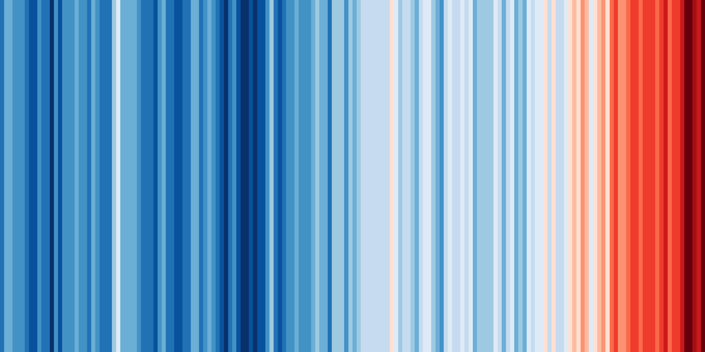

Content from Introduction
Last updated on 2024-11-21 | Edit this page
Estimated time: 15 minutes
What is ESMValTool?
This tutorial is a first introduction to ESMValTool. Before diving into the technical steps, let’s talk about what ESMValTool is all about.
What is ESMValTool?
What do you already know about or expect from ESMValTool?
ESMValTool is…
EMSValTool is many things, but in this tutorial we will focus on the following traits:
✓ A tool to analyse climate data
✓ A collection of diagnostics for reproducible climate science
✓ A community effort
{: .solution} {: .challenge}
A tool to analyse climate data
ESMValTool takes care of finding, opening, checking, fixing, concatenating, and preprocessing CMIP data and several other supported datasets.
The central component of ESMValTool that we will see in this tutorial is the recipe. Any ESMValTool recipe is basically a set of instructions to reproduce a certain result. The basic structure of a recipe is as follows:
- Documentation with relevant (citation) information
- Datasets that should be analysed
- Preprocessor steps that must be applied
- Diagnostic scripts performing more specific evaluation steps
An example recipe could look like this:
YAML
documentation:
title: This is an example recipe.
description: Example recipe
authors:
- lastname_firstname
datasets:
- {dataset: HadGEM2-ES, project: CMIP5, exp: historical, mip: Amon,
ensemble: r1i1p1, start_year: 1960, end_year: 2005}
preprocessors:
global_mean:
area_statistics:
operator: mean
diagnostics:
hockeystick_plot:
description: plot of global mean temperature change
variables:
temperature:
short_name: tas
preprocessor: global_mean
scripts: hockeystick.pyUnderstanding the different section of the recipe
Try to figure out the meaning of the different dataset keys. Hint: they can be found in the documentation of ESMValTool.
Solution
The keys are explained in the ESMValTool documentation, in the
Recipe section, under datasets {: .solution} {: .challenge}
A collection of diagnostics for reproducible climate science
More than a tool, ESMValTool is a collection of publicly available recipes and diagnostic scripts. This makes it possible to easily reproduce important results.
Explore the available recipes
Go to the ESMValTool Documentation webpage and explore the
Available recipessection. Which recipe(s) would you like to try? {: .challenge}
A community effort
ESMValTool is built and maintained by an active community of scientists and software engineers. It is an open source project to which anyone can contribute. Many of the interactions take place on GitHub. Here, we briefly introduce you to some of the most important pages.
Meet the ESMValGroup
Go to github.com/ESMValGroup. This is the GitHub page of our ‘organization’. Have a look around. How many collaborators are there? Do you know any of them?
Near the top of the page there are 2 pinned repositories: ESMValTool and ESMValCore. Visit each of the repositories. How many people have contributed to each of them? Can you also find out how many people have contributed to this tutorial? {: .challenge}
Issues and pull requests
Go back to the repository pages of ESMValTool or ESMValCore. There are tabs for ‘issues’ and ‘pull requests’. You can use the labels to navigate them a bit more. How many open issues are about enhancements of ESMValTool? And how many bugs have been fixed in ESMValCore? There is also an ‘insights’ tab, where you can see a summary of recent activity. How many issues have been opened and closed in the past month? {: .challenge}
Conclusion
This concludes the introduction of the tutorial. You now have a basic knowledge of ESMValTool and its community. The following episodes will walk you through the installation, configuration and running your first recipes.
{% include links.md %}
Content from Quickstart guide
Last updated on 2024-11-21 | Edit this page
Estimated time: 10 minutes
What is the purpose of the quickstart guide?
- The purpose of the quickstart guide is to enable a user of ESMValTool to run ESMValTool as quickly as possible by making the bare minimum number of changes. {: .discussion}
How do I load and check the ESMValTool environment?
For this quickstart guide, an assumption is made that ESMValTool has already been installed at the site where ESMValTool will be run. If this is not the case, see the [Installation][lesson-installation] episode in this tutorial.
Load the ESMValTool environment by following the instructions at [ESMValTool: Pre-installed versions on HPC clusters / other servers][activate-environment].
Check the ESMValTool environment by accessing the help for ESMValTool:
esmvaltool --help{: .language-bash} {: .challenge}
How do I configure ESMValTool?
Create the ESMValTool user configuration file (the file is written by default to
~/.esmvaltool/config-user.yml):esmvaltool config get_config_user{: .language-bash}
Edit the ESMValTool user configuration file using your favourite text editor to uncomment the lines relating to the site where ESMValTool will be run.
For more details about the ESMValTool user configuration file see the [Configuration][lesson-configuration] episode in this tutorial. {: .challenge}
How do I run a recipe?
Run the example Python recipe:
esmvaltool run examples/recipe_python.yml{: .language-bash}
Wait for the recipe to complete. If the recipe completes successfully, the last line printed to screen at the end of the log will look something like:
YYYY-MM-DD HH:mm:SS, NNN UTC [NNNNN] INFO Run was successful{: .language-bash}
View the output of the recipe by opening the HTML file produced by ESMValTool (the location of this file is printed to screen near the end of the log):
YYYY-MM-DD HH:mm:SS, NNN UTC [NNNNN] INFO Wrote recipe output to: file:///$HOME/esmvaltool_output/recipe_python_<date>_<time>/index.html{: .language-bash}
For more details about running recipes see the [Running your first recipe][lesson-recipe] episode in this tutorial. {: .challenge}
{% include links.md %}
Content from Installation
Last updated on 2024-11-21 | Edit this page
Estimated time: 20 minutes
Overview
The instructions help with the installation of ESMValTool on operating systems like Linux/MacOSX/Windows. We use the Mamba package manager to install the ESMValTool. Other installation methods are also available; they can be found in the documentation. We will first install Mamba, and then ESMValTool. We end this chapter by testing that the installation was successful.
Before we begin, here are all the possible ways in which you can use ESMValTool depending on your level of expertise or involvement with ESMValTool and associated software such as GitHub and Mamba.
- If you have access to a server where ESMValTool is already installed as a module, for e.g., the CEDA JASMIN server, you can simply load the module with the following command:
After loading esmvaltool, we can start using ESMValTool
right away. Please see the next
lesson. 2. If you would like to install ESMValTool as a mamba
package, then this lesson will tell you how! 3. If you would like to
start experimenting with existing diagnostics or contributing to
ESMvalTool, please see the instructions for source installation in the
lesson Development
and contribution and in the documentation.
Install ESMValTool on Windows
ESMValTool does not directly support Windows, but successful usage has been reported through the Windows Subsystem for Linux(WSL), available in Windows 10. To install the WSL please follow the instructions on the Windows Documentation page. After installing the WSL, installation can be done using the same instructions for Linux/MacOSX. {: .callout}
Install ESMValTool on Linux/MacOSX
Install Mamba
ESMValTool is distributed using Mamba. To
install mamba on Linux or MacOSX, follow the
instructions below:
Please download the installation file for the latest Mamba version here.
-
Next, run the installer from the place where you downloaded it:
On
Linux:On
MacOSX: Follow the instructions in the installer. The defaults should normally suffice.
You will need to restart your terminal for the changes to have effect.
-
We recommend updating mamba before the esmvaltool installation. To do so, run:
-
Verify you have a working mamba installation by:
This should show the path to your mamba executable, e.g.
~/mambaforge/bin/mamba.
For more information about installing mamba, see the mamba installation documentation.
Install the ESMValTool package
The ESMValTool package contains diagnostics scripts in four languages: R, Python, Julia and NCL. This introduces a lot of dependencies, and therefore the installation can take quite long. It is, however, possible to install ‘subpackages’ for each of the languages. The following (sub)packages are available:
esmvaltool-pythonesmvaltool-nclesmvaltool-r-
esmvaltool–> the complete package, i.e. the combination of the above.
For the tutorial, we will install the complete package. Thus, to install the ESMValTool package, run
On MacOSX ESMValTool functionalities in Julia, NCL, and R are not supported. To install a Mamba environment on MacOSX, please refer to specific information.
This will create a new Mamba
environment called esmvaltool, with the ESMValTool
package and all of its dependencies installed in it.
Common issues
You find a list of common installation problems and their solutions in the documentation.
{: .callout}
Install Julia
Some ESMValTool diagnostics are written in the Julia programming language. If you want a full installation of ESMValTool including Julia diagnostics, you need to make sure Julia is installed before installing ESMValTool.
In this tutorial, we will not use Julia, but for reference, we have listed the steps to install Julia below. Complete instructions for installing Julia can be found on the Julia installation page.
Julia installation instructions
First, open a bash terminal and activate the newly created
esmvaltoolenvironment.Next, to install Julia via
mamba, you can use the following command:To check that the Julia executable can be found, run
to display the path to the Julia executable, it should be
~/mambaforge/envs/esmvaltool/bin/julia{: .output}
To test that Julia is installed correctly, run
to start the interactive Julia interpreter. Press
Ctrl+Dto exit. {: .solution}
Test that the installation was successful
To test that the installation was successful, run
to activate the conda environment called esmvaltool. In
the shell prompt the active conda environment should have been changed
from (base) to (esmvaltool).
Next, run
to display the command line help.
Version of ESMValTool
Can you figure out which version of ESMValTool has been installed?
Solution
The
esmvaltool --helpcommand listsversionas a command to get the versionWhen you run ~~~ esmvaltool version ~~~ {: .bash} The version of ESMValTool installed should be displayed on the screen as: ~~~ ESMValCore: 2.10.0 ESMValTool: 2.10.0 ~~~ {: .output} Note that on HPC servers such as JASMIN, sometimes a more recent development version may be displayed for ESMValTool, for e.g.
ESMValTool: 2.9.0.dev4+g6948d5512{: .solution} {: .challenge}
{% include links.md %}
Content from Configuration
Last updated on 2024-11-21 | Edit this page
Estimated time: 20 minutes
The configuration file
For the purposes of this tutorial, we will create a directory in our
home directory called esmvaltool_tutorial and use that as
our working directory. The following steps should do that:
The config-user.yml configuration file contains all the
global level information needed by ESMValTool to run. This is a YAML file.
You can get the default configuration file by running:
The default configuration file will be downloaded to the directory
specified with the --path variable. For instance, you can
provide the path to your working directory as the
target_dir. If this option is not used, the file will be
saved to the default location:
~/.esmvaltool/config-user.yml, where ~ is the
path to your home directory. Note that files and directories starting
with a period are “hidden”, to see the .esmvaltool
directory in the terminal use ls -la ~. Note that if a
configuration file by that name already exists in the default location,
the get_config_user command will not update the file as
ESMValTool will not overwrite the file. You will have to move the file
first if you want an updated copy of the user configuration file.
We run a text editor called nano to have a look inside
the configuration file and then modify it if needed:
Any other editor can be used, e.g.vim.
This file contains the information for:
- Output settings
- Destination directory
- Auxiliary data directory
- Number of tasks that can be run in parallel
- Rootpath to input data
- Directory structure for the data from different projects
Text editor side note
No matter what editor you use, you will need to know where it searches for and saves files. If you start it from the shell, it will (probably) use your current working directory as its default location. We use
nanoin examples here because it is one of the least complex text editors. Press ctrl + O to save the file, and then ctrl + X to exitnano. {: .callout}
Output settings
The configuration file starts with output settings that inform
ESMValTool about your preference for output. You can turn on or off the
setting by true or false values. Most of these
settings are fairly self-explanatory.
Saving preprocessed data
Later in this tutorial, we will want to look at the contents of the
preprocfolder. This folder contains preprocessed data and is removed by default when ESMValTool is run. In the configuration file, which settings can be modified to prevent this from happening?Solution
If the option
remove_preproc_diris set tofalse, then thepreproc/directory contains all the pre-processed data and the metadata interface files. If the optionsave_intermediary_cubesis set totruethen data will also be saved after each preprocessor step in the folderpreproc. Note that saving all intermediate results to file will result in a considerable slowdown, and can quickly fill your disk. {: .solution} {: .challenge}
Destination directory
The destination directory is the rootpath where ESMValTool will store its output folders containing e.g. figures, data, logs, etc. With every run, ESMValTool automatically generates a new output folder determined by recipe name, and date and time using the format: YYYYMMDD_HHMMSS.
Set the destination directory
Let’s name our destination directory
esmvaltool_outputin the working directory. ESMValTool should write the output to this path, so make sure you have the disk space to write output to this directory. How do we set this in theconfig-user.yml?Solution
We use
output_direntry in theconfig-user.ymlfile as:If the
esmvaltool_outputdoes not exist, ESMValTool will generate it for you. {: .solution} {: .challenge}
Rootpath to input data
ESMValTool uses several categories (in ESMValTool, this is referred to as projects) for input data based on their source. The current categories in the configuration file are mentioned below. For example, CMIP is used for a dataset from the Climate Model Intercomparison Project whereas OBS may be used for an observational dataset. More information about the projects used in ESMValTool is available in the documentation. When using ESMValTool on your own machine, you can create a directory to download climate model data or observation data sets and let the tool use data from there. It is also possible to ask ESMValTool to download climate model data as needed. This can be done by specifying a download directory and by setting the option to download data as shown below.
YAML
# Directory for storing downloaded climate data
download_dir: ~/climate_data
search_esgf: alwaysIf you are working offline or do not want to download the data then
set the option above to never. If you want to download data
only when the necessary files are missing at the usual location, you can
set the option to when_missing.
The rootpath specifies the directories where ESMValTool
will look for input data. For each category, you can define either one
path or several paths as a list. For example:
YAML
rootpath:
CMIP5: [~/cmip5_inputpath1, ~/cmip5_inputpath2]
OBS: ~/obs_inputpath
RAWOBS: ~/rawobs_inputpath
default: ~/climate_dataThese are typically available in the default configuration file you downloaded, so simply removing the machine specific lines should be sufficient to access input data.
Set the correct rootpath
In this tutorial, we will work with data from CMIP5 and CMIP6. How can we modify the
rootpathto make sure the data path is set correctly for both CMIP5 and CMIP6? Note: to get the data, check the instructions in Setup.Solution
- Are you working on your own local machine? You need to add the root path of the folder where the data is available to the
config-user.ymlfile as:
- Are you working on your local machine and have downloaded data using ESMValTool? You need to add the root path of the folder where the data has been downloaded to as specified in the
download_dir.
- Are you working on a computer cluster like Jasmin or DKRZ? Site-specific path to the data for JASMIN/DKRZ/ETH/IPSL are already listed at the end of the
config-user.ymlfile. You need to uncomment the related lines. For example, on JASMIN:YAML
auxiliary_data_dir: /gws/nopw/j04/esmeval/aux_data/AUX rootpath: CMIP6: /badc/cmip6/data/CMIP6 CMIP5: /badc/cmip5/data/cmip5/output1 OBS: /gws/nopw/j04/esmeval/obsdata-v2 OBS6: /gws/nopw/j04/esmeval/obsdata-v2 obs4MIPs: /gws/nopw/j04/esmeval/obsdata-v2 ana4mips: /gws/nopw/j04/esmeval/obsdata-v2 default: /gws/nopw/j04/esmeval/obsdata-v2
- For more information about setting the rootpath, see also the ESMValTool documentation. {: .solution} {: .challenge}
Directory structure for the data from different projects
Input data can be from various models, observations and reanalysis
data that adhere to the CF/CMOR
standard. The drs setting describes the file
structure.
The drs setting describes the file structure for several
projects (e.g. CMIP6, CMIP5, obs4mips, OBS6, OBS) on several key
machines (e.g. BADC, CP4CDS, DKRZ, ETHZ, SMHI, BSC). For more
information about drs, you can visit the ESMValTool
documentation on Data
Reference Syntax (DRS).
Set the correct drs
In this lesson, we will work with data from CMIP5 and CMIP6. How can we set the correct
drs?Solution
- Are you working on your own local machine? You need to set the
drsof the data in theconfig-user.ymlfile as:
- Are you asking ESMValTool to download the data for use with your diagnostics? You need to set the
drsof the data in theconfig-user.ymlfile as:
- Are you working on a computer cluster like Jasmin or DKRZ? Site-specific
drsof the data are already listed at the end of theconfig-user.ymlfile. You need to uncomment the related lines. For example, on Jasmin:YAML
# Site-specific entries: Jasmin # Uncomment the lines below to locate data on JASMIN drs: CMIP6: BADC CMIP5: BADC OBS: default OBS6: default obs4mips: default ana4mips: default{: .solution} {: .challenge}
Explain the default drs (if working on local machine)
- In the previous exercise, we set the
drsof CMIP5 data todefault. Can you explain why?- Have a look at the directory structure of the
OBSdata. There is a folder calledTier1. What does it mean?Solution
drs: defaultis one way to retrieve data from a ROOT directory that has no DRS-like structure.defaultindicates that all the files are in a folder without any structure.Observational data are organized in Tiers depending on their level of public availability. Therefore the default directory must be structured accordingly with sub-directories
TierXe.g. Tier1, Tier2 or Tier3, even whendrs: default. More details can be found in the documentation.{: .solution} {: .challenge}
Other settings
Auxiliary data directory
The
auxiliary_data_dirsetting is the path where any required additional auxiliary data files are stored. This location allows us to tell the diagnostic script where to find the files if they can not be downloaded at runtime. This option should not be used for model or observational datasets, but for data files (e.g. shape files) used in plotting such as coastline descriptions and if you want to feed some additional data (e.g. shape files) to your recipe.See more information in ESMValTool document. {: .callout}
Number of parallel tasks
This option enables you to perform parallel processing. You can choose the number of tasks in parallel as 1/2/3/4/… or you can set it to
null. That tells ESMValTool to use the maximum number of available CPUs. For the purpose of the tutorial, please set ESMValTool use only 1 cpu:In general, if you run out of memory, try setting
max_parallel_tasksto 1. Then, check the amount of memory you need for that by inspecting the filerun/resource_usage.txtin the output directory. Using the number there you can increase the number of parallel tasks again to a reasonable number for the amount of memory available in your system. {: .callout}
Make your own configuration file
It is possible to have several configuration files with different purposes, for example: config-user_formalised_runs.yml, config-user_debugging.yml. In this case, you have to pass the path of your own configuration file as a command-line option when running the ESMValTool. We will learn how to do this in the next lesson. {: .callout}
{% include links.md %}
Content from Running your first recipe
Last updated on 2024-11-21 | Edit this page
Estimated time: 30 minutes
This episode describes how ESMValTool recipes work, how to run a recipe and how to explore the recipe output. By the end of this episode, you should be able to run your first recipe, look at the recipe output, and make small modifications.
Running an existing recipe
The recipe format has briefly been introduced in the [Introduction][lesson-introduction] episode. To see all the recipes that are shipped with ESMValTool, type
We will start by running examples/recipe_python.yml
esmvaltool run examples/recipe_python.ymlor if you have the user configuration file in your current directory then
esmvaltool run --config_file ./config-user.yml examples/recipe_python.ymlIf everything is okay, you should see that ESMValTool is printing a lot of output to the command line. The final message should be “Run was successful”. The exact output varies depending on your machine, but it should look something like the example log output on terminal below.
{% include example_output.txt %}
Pro tip: ESMValTool search paths
You might wonder how ESMValTool was able find the recipe file, even though it’s not in your working directory. All the recipe paths printed from
esmvaltool recipes listare relative to ESMValTool’s installation location. This is where ESMValTool will look if it cannot find the file by following the path from your working directory. {: .callout}
Investigating the log messages
Let’s dissect what’s happening here.
Output files and directories
After the banner and general information, the output starts with some important locations.
- Did ESMValTool use the right config file?
- What is the path to the example recipe?
- What is the main output folder generated by ESMValTool?
- Can you guess what the different output directories are for?
- ESMValTool creates two log files. What is the difference?
Answers
- The config file should be the one we edited in the previous episode, something like
/home/<username>/.esmvaltool/config-user.ymlor~/esmvaltool_tutorial/config-user.yml.- ESMValTool found the recipe in its installation directory, something like
/home/users/username/mambaforge/envs/esmvaltool/bin/esmvaltool/recipes/examples/or if you are using a pre-installed module on a server, something like/apps/jasmin/community/esmvaltool/ESMValTool_<version> /esmvaltool/recipes/examples/recipe_python.yml, where<version>is the latest release.- ESMValTool creates a time-stamped output directory for every run. In this case, it should be something like
recipe_python_YYYYMMDD_HHMMSS. This folder is made inside the output directory specified in the previous episode:~/esmvaltool_tutorial/esmvaltool_output.- There should be four output folders:
plots/: this is where output figures are stored.preproc/: this is where pre-processed data are stored.run/: this is where esmvaltool stores general information about the run, such as log messages and a copy of the recipe file.work/: this is where output files (not figures) are stored.- The log files are:
main_log.txtis a copy of the command-line outputmain_log_debug.txtcontains more detailed information that may be useful for debugging.{: .solution} {: .challenge}
Debugging: No ‘preproc’ directory?
If you’re missing the preproc directory, then your
config-user.ymlfile has the valueremove_preproc_dirset totrue(this is used to save disk space). Please set this value tofalseand run the recipe again.{: .callout}
After the output locations, there are two main sections that can be distinguished in the log messages:
- Creating tasks
- Executing tasks
Analyse the tasks
List all the tasks that ESMValTool is executing for this recipe. Can you guess what this recipe does?
Answer
Just after all the ‘creating tasks’ and before ‘executing tasks’, we find the following line in the output:
[134535] INFO These tasks will be executed: map/tas, timeseries/tas_global, timeseries/script1, map/script1, timeseries/tas_amsterdamSo there are three tasks related to timeseries: global temperature, Amsterdam temperature, and a script (tas: near-surface air temperature). And then there are two tasks related to a map: something with temperature, and again a script. {: .solution} {: .challenge}
Examining the recipe file
To get more insight into what is happening, we will have a look at the recipe file itself. Use the following command to copy the recipe to your working directory
Now you should see the recipe file in your working directory (type
ls to verify). Use the nano editor to open
this file:
For reference, you can also view the recipe by unfolding the box below.
recipe_python.yml
YAML
# ESMValTool # recipe_python.yml # # See https://docs.esmvaltool.org/en/latest/recipes/recipe_examples.html # for a description of this recipe. # # See https://docs.esmvaltool.org/projects/esmvalcore/en/latest/recipe/overview.html # for a description of the recipe format. --- documentation: description: | Example recipe that plots a map and timeseries of temperature. title: Recipe that runs an example diagnostic written in Python. authors: - andela_bouwe - righi_mattia maintainer: - schlund_manuel references: - acknow_project projects: - esmval - c3s-magic datasets: - {dataset: BCC-ESM1, project: CMIP6, exp: historical, ensemble: r1i1p1f1, grid: gn} - {dataset: bcc-csm1-1, project: CMIP5, exp: historical, ensemble: r1i1p1} preprocessors: # See https://docs.esmvaltool.org/projects/esmvalcore/en/latest/recipe/preprocessor.html # for a description of the preprocessor functions. to_degrees_c: convert_units: units: degrees_C annual_mean_amsterdam: extract_location: location: Amsterdam scheme: linear annual_statistics: operator: mean multi_model_statistics: statistics: - mean span: overlap convert_units: units: degrees_C annual_mean_global: area_statistics: operator: mean annual_statistics: operator: mean convert_units: units: degrees_C diagnostics: map: description: Global map of temperature in January 2000. themes: - phys realms: - atmos variables: tas: mip: Amon preprocessor: to_degrees_c timerange: 2000/P1M caption: | Global map of {long_name} in January 2000 according to {dataset}. scripts: script1: script: examples/diagnostic.py quickplot: plot_type: pcolormesh cmap: Reds timeseries: description: Annual mean temperature in Amsterdam and global mean since 1850. themes: - phys realms: - atmos variables: tas_amsterdam: short_name: tas mip: Amon preprocessor: annual_mean_amsterdam timerange: 1850/2000 caption: Annual mean {long_name} in Amsterdam according to {dataset}. tas_global: short_name: tas mip: Amon preprocessor: annual_mean_global timerange: 1850/2000 caption: Annual global mean {long_name} according to {dataset}. scripts: script1: script: examples/diagnostic.py quickplot: plot_type: plot{: .solution}
Do you recognize the basic recipe structure that was introduced in episode 1?
- Documentation with relevant (citation) information
- Datasets that should be analysed
- Preprocessors groups of common preprocessing steps
- Diagnostics scripts performing more specific evaluation steps
Analyse the recipe
Try to answer the following questions:
- Who wrote this recipe?
- Who should be approached if there is a problem with this recipe?
- How many datasets are analyzed?
- What does the preprocessor called
annual_mean_globaldo?- Which script is applied for the diagnostic called
map?- Can you link specific lines in the recipe to the tasks that we saw before?
- How is the location of the city specified?
- How is the temporal range of the data specified?
Answers
- The example recipe is written by Bouwe Andela and Mattia Righi.
- Manuel Schlund is listed as the maintainer of this recipe.
- Two datasets are analysed:
- CMIP6 data from the model BCC-ESM1
- CMIP5 data from the model bcc-csm1-1
- The preprocessor
annual_mean_globalcomputes an area mean as well as annual means- The diagnostic called
mapexecutes a script referred to asscript1. This is a python script namedexamples/diagnostic.py- There are two diagnostics:
mapandtimeseries. Under the diagnosticmapwe find two tasks:Under the diagnostic
- a preprocessor task called
tas, applying the preprocessor calledto_degrees_cto the variabletas.- a diagnostic task called
script1, applying the scriptexamples/diagnostic.pyto the preprocessed data (map/tas).timeserieswe find three tasks:
- a preprocessor task called
tas_amsterdam, applying the preprocessor calledannual_mean_amsterdamto the variabletas.- a preprocessor task called
tas_global, applying the preprocessor calledannual_mean_globalto the variabletas.- a diagnostic task called
script1, applying the scriptexamples/diagnostic.pyto the preprocessed data (timeseries/tas_globalandtimeseries/tas_amsterdam).- The
extract_locationpreprocessor is used to get data for a specific location here. ESMValTool interpolates to the location based on the chosen scheme. Can you tell the scheme used here? For more ways to extract areas, see the [Area operations][preproc-area-manipulation] page.- The
timerangetag is used to extract data from a specific time period here. The start time is01/01/2000and the span of time to calculate means is1 Monthgiven byP1M. For more options on how to specify time ranges, see the [timerange documentation][timeranges]. {: .solution} {: .challenge}
Pro tip: short names and variable groups
The preprocessor tasks in ESMValTool are called ‘variable groups’. For the diagnostic
timeseries, we have two variable groups:tas_amsterdamandtas_global. Both of them operate on the variabletas(as indicated by theshort_name), but they apply different preprocessors. For the diagnosticmapthe variable group itself is namedtas, and you’ll notice that we do not explicitly provide theshort_name. This is a shorthand built into ESMValTool. {: .callout}
Output files
Have another look at the output directory created by the ESMValTool run.
Which files/folders are created by each task?
Answer
- map/tas: creates
/preproc/map/tas, which contains preprocessed data for each of the input datasets, a file calledmetadata.ymldescribing the contents of these datasets and provenance information in the form of.xmlfiles.- timeseries/tas_global: creates
/preproc/timeseries/tas_global, which contains preprocessed data for each of the input datasets, ametadata.ymlfile and provenance information in the form of.xmlfiles.- timeseries/tas_amsterdam: creates
/preproc/timeseries/tas_amsterdam, which contains preprocessed data for each of the input datasets, plus a combinedMultiModelMean, ametadata.ymlfile and provenance files.- map/script1: creates
/run/map/script1with general information and a log of the diagnostic script run. It also creates/plots/map/script1/and/work/map/script1, which contain output figures and output datasets, respectively. For each output file, there is also corresponding provenance information in the form of.xml,.bibtexand.txtfiles.- timeseries/script1: creates
/run/timeseries/script1with general information and a log of the diagnostic script run. It also creates/plots/timeseries/script1and/work/timeseries/script1, which contain output figures and output datasets, respectively. For each output file, there is also corresponding provenance information in the form of.xml,.bibtexand.txtfiles.{: .solution} {: .challenge}
Pro tip: diagnostic logs
When you run ESMValTool, any log messages from the diagnostic script are not printed on the terminal. But they are written to the
log.txtfiles in the folder/run/<diag_name>/log.txt.ESMValTool does print a command that can be used to re-run a diagnostic script. When you use this the output will be printed to the command line. {: .callout}
Modifying the example recipe
Let’s make a small modification to the example recipe. Notice that now that you have copied and edited the recipe, you can use
esmvaltool run recipe_python.ymlto refer to your local file rather than the default version shipped with ESMValTool.
Change your location
Modify and run the recipe to analyse the temperature for your own location.
Solution
In principle, you only have to modify the location in the preprocessor called
annual_mean_amsterdam. However, it is good practice to also replace all instances ofamsterdamwith the correct name of your location. Otherwise the log messages and output will be confusing. You are free to modify the names of preprocessors or diagnostics.In the
difffile below you will see the changes we have made to the file. The top 2 lines are the filenames and the lines like@@ -39,9 +39,9 @@represent the line numbers in the original and modified file, respectively. For more info on this format, see here.DIFF
--- recipe_python.yml +++ recipe_python_london.yml @@ -39,9 +39,9 @@ convert_units: units: degrees_C - annual_mean_amsterdam: + annual_mean_london: extract_location: - location: Amsterdam + location: London scheme: linear annual_statistics: operator: mean @@ -83,7 +83,7 @@ cmap: Reds timeseries: - description: Annual mean temperature in Amsterdam and global mean since 1850. + description: Annual mean temperature in London and global mean since 1850. themes: - phys realms: @@ -92,9 +92,9 @@ tas_amsterdam: short_name: tas mip: Amon - preprocessor: annual_mean_amsterdam + preprocessor: annual_mean_london timerange: 1850/2000 - caption: Annual mean {long_name} in Amsterdam according to {dataset}. + caption: Annual mean {long_name} in London according to {dataset}. tas_global: short_name: tas mip: Amon{: .solution} {: .challenge}
{% include links.md %}
Content from Conclusion of the basic tutorial
Last updated on 2024-11-21 | Edit this page
Estimated time: 10 minutes
Congratulations!
Congratulations on completing the ESMValTool tutorial! You should be now ready to go and start using ESMValTool independently.
The rest of this tutorial contains individual mini-tutorials to help work through a specific issue (not developed yet).
What next?
From here, there are lots of ways that you can continue to use ESMValTool.
- You can start from the list of existing recipes and run one of those.
- You can learn how to write your own diagnostics and recipes.
- You can contribute your recipe and diagnostics back into ESMValTool.
- You can learn how to prepare observational datasets to be suitable for use by ESMValTool.
Exercise: What do you want to do next?
- Think about what you want to do with ESMValTool.
- Decide what datasets and variables you want to use.
- Is any observational data available?
- How will you preprocess the data?
- What will your diagnostic script need to do?
- What will your final figure show? {: .challenge}
Where can I get more help?
There are lots of resources available to assist you in using ESMValTool.
The ESMValTool Discussions page is a good place to find information on general issues, or check if your question has already been addressed. If you have a GitHub account, you can also post your questions there.
If you encounter difficulties, a great starting point is to visit issues page issue page to check whether your issues have already been reported or not. If they have been reported before, suggestions provided by developers can help you to solve the issues you encountered. Note that you will need a GitHub account for this.
Additionally, there is an ESMValTool email list. Please see information on how to subscribe to the user mailing list.
What if I find a bug?
If you find a bug, please report it to the ESMValTool team. This will help us fix issues, ensuring not only your uninterrupted workflow but also contributing to the overall stability of ESMValTool for all users.
To report a bug, please create a new issue using the issue page.
In your bug report, please describe the problem as clearly and as completely as possible. You may need to include a recipe or the output log as well.
How do I cite the Tutorial?
Please use citation information available at https://doi.org/10.5281/zenodo.3974591.
{% include links.md %}
Content from Writing your own recipe
Last updated on 2024-11-21 | Edit this page
Estimated time: 45 minutes
Introduction
One of the key strengths of ESMValTool is in making complex analyses reusable and reproducible. But that doesn’t mean everything in ESMValTool needs to be complex. Sometimes, the biggest challenge is in keeping things simple. You probably know the ‘warming stripes’ visualization by Professor Ed Hawkins. On the site https://showyourstripes.info{:target=“_blank”} you can find the same visualization for many regions in the world.
Shared by Ed Hawkins under a Creative Commons 4.0 Attribution International licence. Source: https://showyourstripes.info
In this episode, we will reproduce and extend this functionality with ESMValTool. We have prepared a small Python script that takes a NetCDF file with timeseries data, and visualizes it in the form of our desired warming stripes figure.
The diagnostic script that we will use is called
warming_stripes.py and can be downloaded here.
Download the file and store it in your working directory. If you want, you may also have a look at the contents, but it is not necessary to do so for this lesson.
We will write an ESMValTool recipe that takes some data, performs the necessary preprocessing, and then runs this Python script.
Drawing up a plan
Previously, we saw that running ESMValTool executes a number of tasks. What tasks do you think we will need to execute and what should each of these tasks do to generate the warming stripes?
Answer
In this episode, we will need to do the following two tasks:
- A preprocessing task that converts the gridded temperature data to a timeseries of global temperature anomalies
- A diagnostic tasks that calls our Python script, taking our preprocessed timeseries data as input.
{: .solution} {: .challenge}
Building a recipe from scratch
The easiest way to make a new recipe is to start from an existing one, and modify it until it does exactly what you need. However, in this episode we will start from scratch. This forces us to think about all the steps involved in processing the data. We will also deal with commonly occurring errors through the development of the recipe.
Remember the basic structure of a recipe, and notice that each component is extensively described in the documentation under the section, [“Overview”][recipe-overview]{:target=“_blank”}:
- [documentation][recipe-section-documentation]{:target=“_blank”}
- [datasets][recipe-section-datasets]{:target=“_blank”}
- [preprocessors][recipe-section-preprocessors]{:target=“_blank”}
- [diagnostics][recipe-section-diagnostics]{:target=“_blank”}
This is the first place to look for help if you get stuck.
Open a new file called recipe_warming_stripes.yml:
Let’s add the standard header comments (these do not do anything), and a first description.
YAML
# ESMValTool
# recipe_warming_stripes.yml
---
documentation:
description: Reproducing Ed Hawkins' warming stripes visualization
title: Reproducing Ed Hawkins' warming stripes visualization.Notice that yaml always requires two spaces
indentation between the different levels. Pressing ctrl+o
will save the file. Verify the filename at the bottom and press enter.
Then use ctrl+x to exit the editor.
We will try to run the recipe after every modification we make, to see if it (still) works!
In this case, it gives an error. Below you see the last few lines of the error message.
...
yamale.yamale_error.YamaleError:
Error validating data '/home/users/username/esmvaltool_tutorial/recipe_warming_stripes.yml'
with schema
'/apps/jasmin/community/esmvaltool/miniconda3_py311_23.11.0-2/envs/esmvaltool/lib/python3.11/
site-packages/esmvalcore/_recipe/recipe_schema.yml'
documentation.authors: Required field missing
2024-05-27 13:21:23,805 UTC [41924] INFO
If you have a question or need help, please start a new discussion on
https://github.com/ESMValGroup/ESMValTool/discussions
If you suspect this is a bug, please open an issue on
https://github.com/ESMValGroup/ESMValTool/issues
To make it easier to find out what the problem is, please consider attaching the
files run/recipe_*.yml and run/main_log_debug.txt from the output directory.
{: .error}
We can use the the log message above, to understand why ESMValTool
failed. Here, this is because we missed a required field with author
names. The text
documentation.authors: Required field missing tells us
that. We see that ESMValTool always tries to validate the recipe at an
early stage. Note also the suggestion to open a GitHub issue if you need
help debugging the error message. This is something most users do when
they cannot understand the error or are not able to fix it on their
own.
Let’s add some additional information to the recipe. Open the recipe file again, and add an authors section below the description. ESMValTool expects the authors as a list, like so:
To bypass a number of similar error messages, add a minimal diagnostics section below the documentation. The file should now look like:
YAML
# ESMValTool
# recipe_warming_stripes.yml
---
documentation:
description: Reproducing Ed Hawkins' warming stripes visualization
title: Reproducing Ed Hawkins' warming stripes visualization.
authors:
- doe_john
diagnostics:
dummy_diagnostic_1:
scripts: nullThis is the minimal recipe layout that is required by ESMValTool. If we now run the recipe again, you will probably see the following error:
ValueError: Tag 'doe_john' does not exist in section
'authors' of /apps/jasmin/community/esmvaltool/ESMValTool_2.10.0/esmvaltool/config-references.yml
{: .error}
Pro tip: config-references.yml
The error message above points to a file named [config-references.yml][config-references] This is where ESMValTool stores all its citation information. To add yourself as an author, add your name in the form
lastname_firstnamein alphabetical order following the existing entries, under the# Development teamsection. See the [List of authors][list-of-authors]{:target=“_blank”} section in the ESMValTool documentation for more information. {: .callout}
For now, let’s just use one of the existing references. Change the
author field to righi_mattia, who cannot receive enough
credit for all the effort he put into ESMValTool. If you now run the
recipe again, you should see the final message
ERROR No tasks to run!{: .output}
Although there is no actual error in the recipe, ESMValTool assumes you mistakenly left out a variable name to process and alerts you with this error message. ## Adding a dataset entry
Let’s add a datasets section.
Filling in the dataset keys
Use the paths specified in the configuration file to explore the data directory, and look at the explanation of the dataset entry in the [ESMValTool documentation][recipe-section-datasets]{:target=“_blank”}. For both the datasets, write down the following properties:
- project
- variable (short name)
- CMIP table
- dataset (model name or obs/reanalysis dataset)
- experiment
- ensemble member
- grid
- start year
- end year
Answers
key | file 1 | file 2 |
project | CMIP6 | CMIP5 |
short name | tas | tas |
CMIP table | Amon | Amon |
dataset | BCC-ESM1 | bcc-csm1-1|
experiment | historical | historical |
ensemble | r1i1p1f1 | r1i1p1 |
grid | gn (native grid) | N/A |
start year | 1850 | 1850 |
end year | 2014 | 2005 |Note that the grid key is only required for CMIP6 data, and that the extent of the historical period has changed between CMIP5 and CMIP6.
{: .solution} {: .challenge}
Let us start with the BCC-ESM1 dataset and add a datasets section to
the recipe, listing this single dataset, as shown below. Note that key
fields such as mip or start_year are included
in the datasets section here but are part of the
diagnostic section in the recipe example seen in Running
your first recipe.
YAML
# ESMValTool
# recipe_warming_stripes.yml
---
documentation:
description: Reproducing Ed Hawkins' warming stripes visualization
title: Reproducing Ed Hawkins' warming stripes visualization.
authors:
- doe_john
datasets:
- {dataset: BCC-ESM1, project: CMIP6, mip: Amon, exp: historical,
ensemble: r1i1p1f1, grid: gn, start_year: 1850, end_year: 2014}
diagnostics:
dummy_diagnostic_1:
scripts: nullThe recipe should run but produce the same message as in the previous case since we still have not included a variable to actually process. We have not included the short name of the variable in this dataset section because this allows us to reuse this dataset entry with different variable names later on. This is not really necessary for our simple use case, but it is common practice in ESMValTool.
Pro-tip: Automatically populating a recipe with all available datasets
You can select all available models for processing using
globpatterns or wildcards. An exampledatasetssection that uses all available CMIP6 models and ensemble members for thehistoricalexperiment is available [here] [include-all-datasets]{:target=“_blank”}. Note that you will have to set thesearch_esgfoption in theconfig_filetoalwaysso that you can download data from ESGF nodes as needed. {: .callout}
Adding the preprocessor section
Above, we already described the preprocessing task that needs to convert the standard, gridded temperature data to a timeseries of temperature anomalies.
Defining the preprocessor
Have a look at the available preprocessors in the [documentation][preprocessor]{:target=“_blank”}. Write down
- Which preprocessor functions do you think we should use?
- What are the parameters that we can pass to these functions?
- What do you think should be the order of the preprocessors?
- A suitable name for the overall preprocessor
Solution
We need to calculate anomalies and global means. There is an
anomaliespreprocessor which takes in as arguments, a time period, a reference period, and whether or not to standardize the data. The global means can be calculated with thearea_statisticspreprocessor, which takes an operator as argument (in our case we want to compute themean).The default order in which these preprocessors are applied can be seen [here][preprocessor-functions]{:target=“_blank”}:
area_statisticscomes beforeanomalies. If you want to change this, you can use thecustom_orderpreprocessor as described [here][recipe-section-preprocessors]{:target=“_blank”}. For this example, we will keep the default order..Let’s name our preprocessor
global_anomalies. {: .solution} {: .challenge}
Add the following block to your recipe file between the
datasets and diagnostics block:
Completing the diagnostics section
We are now ready to finish our diagnostics section. Remember that we want to create two tasks: a preprocessor task, and a diagnostic task. To illustrate that we can also pass settings to the diagnostic script, we add the option to specify a custom colormap.
Fill in the blanks
Extend the diagnostics section in your recipe by filling in the blanks in the following template:
YAML
diagnostics: <... (suitable name for our diagnostic)>: description: <...> variables: <... (suitable name for the preprocessed variable)>: short_name: <...> preprocessor: <...> scripts: <... (suitable name for our python script)>: script: <full path to python script> colormap: <... choose from matplotlib colormaps>Solution
YAML
diagnostics: diagnostic_warming_stripes: description: visualize global temperature anomalies as warming stripes variables: global_temperature_anomalies_global: short_name: tas preprocessor: global_anomalies scripts: warming_stripes_script: script: ~/esmvaltool_tutorial/warming_stripes.py colormap: 'bwr'{: .solution} {: .challenge}
You should now be able to run the recipe to get your own warming stripes.
Note: for the purpose of simplicity in this episode, we have not added logging or provenance tracking in the diagnostic script. Once you start to develop your own diagnostic scripts and want to add them to the ESMValTool repositories, this will be required. Writing your own diagnostic script is discussed in a later episode.
Bonus exercises
Below are a few exercises to practice modifying an ESMValTool recipe. For your reference, here’s a copy of the recipe at this point. This will be the point of departure for each of the modifications we’ll make below.
Specific location selection
On showyourstripes.org, you can download stripes for specific locations. Here we show how this can be done with ESMValTool. Instead of the global mean, we can pick a location to plot the stripes for. Can you find a suitable preprocessor to do this?
Solution
You can use
extract_pointorextract_regionto select a location. We usedextract_point. Here’s a copy of the recipe at this point and this is the difference from the previous recipe:DIFF
--- recipe_warming_stripes.yml +++ recipe_warming_stripes_local.yml @@ -10,9 +10,11 @@ - {dataset: BCC-ESM1, project: CMIP6, mip: Amon, exp: historical, ensemble: r1i1p1f1, grid: gn, start_year: 1850, end_year: 2014} preprocessors: - global_anomalies: - area_statistics: - operator: mean + anomalies_amsterdam: + extract_point: + latitude: 52.379189 + longitude: 4.899431 + scheme: linear anomalies: period: month reference: @@ -27,9 +29,9 @@ diagnostics: diagnostic_warming_stripes: variables: - global_temperature_anomalies: + temperature_anomalies_amsterdam: short_name: tas - preprocessor: global_anomalies + preprocessor: anomalies_amsterdam scripts: warming_stripes_script: script: ~/esmvaltool_tutorial/warming_stripes.py{: .solution} {:.challenge}
Different time periods
Split the diagnostic in two with two different time periods for the same variable. You can choose the time periods yourself. In the example below, we have chosen the recent past and the 20th century and have used variable grouping.
Solution
Here’s a copy of the recipe at this point and this is the difference with the previous recipe:
DIFF
--- recipe_warming_stripes_local.yml +++ recipe_warming_stripes_periods.yml @@ -7,7 +7,7 @@ datasets: - - {dataset: BCC-ESM1, project: CMIP6, mip: Amon, exp: historical, - ensemble: r1i1p1f1, grid: gn, start_year: 1850, end_year: 2014} + - {dataset: BCC-ESM1, project: CMIP6, mip: Amon, exp: historical, + ensemble: r1i1p1f1, grid: gn} preprocessors: anomalies_amsterdam: @@ -29,9 +29,16 @@ diagnostics: diagnostic_warming_stripes: variables: - temperature_anomalies_amsterdam: + temperature_anomalies_recent: short_name: tas preprocessor: anomalies_amsterdam + start_year: 1950 + end_year: 2014 + temperature_anomalies_20th_century: + short_name: tas + preprocessor: anomalies_amsterdam + start_year: 1900 + end_year: 1999 scripts: warming_stripes_script: script: ~/esmvaltool_tutorial/warming_stripes.py{: .solution} {:.challenge}
Different preprocessors
Now that you have different variable groups, we can also use different preprocessors. Add a second preprocessor to add another location of your choosing.
Solution
Here’s a copy of the recipe at this point and this is the difference with the previous recipe:
DIFF
--- recipe_warming_stripes_periods.yml +++ recipe_warming_stripes_multiple_locations.yml @@ -15,7 +15,7 @@ latitude: 52.379189 longitude: 4.899431 scheme: linear - anomalies: + anomalies: &anomalies period: month reference: start_year: 1981 @@ -25,18 +25,24 @@ end_month: 12 end_day: 31 standardize: false + anomalies_london: + extract_point: + latitude: 51.5074 + longitude: 0.1278 + scheme: linear + anomalies: *anomalies diagnostics: diagnostic_warming_stripes: variables: - temperature_anomalies_recent: + temperature_anomalies_recent_amsterdam: short_name: tas preprocessor: anomalies_amsterdam start_year: 1950 end_year: 2014 - temperature_anomalies_20th_century: + temperature_anomalies_20th_century_london: short_name: tas - preprocessor: anomalies_amsterdam + preprocessor: anomalies_london start_year: 1900 end_year: 1999 scripts:{: .solution}
{:.challenge}
Pro-tip: YAML anchors
If you want to avoid retyping the arguments used in your preprocessor, you can use YAML anchors as seen in the
anomaliespreprocessor specifications in the recipe above. {:.callout}
Additional datasets
So far we have defined the datasets in the datasets section of the recipe. However, it’s also possible to add specific datasets only for specific variables or variable groups. Take a look at the documentation to learn about the
additional_datasetskeyword [here][additional-datasets]{:target=“_blank”}, and add a second dataset only for one of the variable groups.Solution
Here’s a copy of the recipe at this point and this is the difference with the previous recipe:
DIFF
--- recipe_warming_stripes_multiple_locations.yml +++ recipe_warming_stripes_additional_datasets.yml @@ -45,6 +45,8 @@ preprocessor: anomalies_london start_year: 1900 end_year: 1999 + additional_datasets: + - {dataset: CanESM2, project: CMIP5, mip: Amon, exp: historical, ensemble: r1i1p1} scripts: warming_stripes_script: script: ~/esmvaltool_tutorial/warming_stripes.py{: .solution} {:.challenge}
Multiple ensemble members
You can choose data from multiple ensemble members for a model in a single line.
Solution
The
datasetsection allows you to choose more than one ensemble member Here’s a copy of the changed recipe to do that. Changes made are shown in the diff output below:DIFF
--- recipe_warming_stripes.yml 2024-05-27 15:37:52.340358967 +0100 +++ recipe_warming_stripes_multiens.yml 2024-05-27 22:18:42.035558837 +0100 @@ -10,7 +10,7 @@ - ensemble: r1i1p1f1, grid: gn, start_year: 1850, end_year: 2014} + ensemble: "r(1:2)i1p1f1", grid: gn, start_year: 1850, end_year: 2014}{: .solution} {:.challenge}
Pro-tip: Concatenating datasets
Check out the section on a different way to use multiple ensemble members or even multiple experiments at [Concatenating data corresponding to multiple facets] [concatenating-datasets]{:target=“_blank”}.
{: .callout}
{% include links.md %}
Content from Development and contribution
Last updated on 2024-11-21 | Edit this page
Estimated time: 30 minutes
We now know how ESMValTool works, but how do we develop it? ESMValTool is an open-source project in ESMValGroup. We can contribute to its development by:
- a new or updated recipe script, see lesson on Writing your own recipe
- a new or updated diagnostics script, see lesson on Writing your own diagnostic script
- a new or updated cmorizer script, see lesson on CMORization: Using observational datasets
- helping with reviewing process of pull requests, see ESMValTool documentation on Review of pull requests
In this lesson, we first show how to set up a development installation of ESMValTool so you can make changes or additions. We then explain how you can contribute these changes to the community.
Git knowledge
For this episode, you need some knowledge of Git. You can refresh your knowledge in the corresponding Git carpentries course. {: .callout}
Development installation
We’ll explore how ESMValTool can be installed it in a
develop mode. Even if you aren’t collaborating with the
community, this installation is needed to run your new codes with
ESMValTool. Let’s get started.
1 Source code
The ESMValTool source code is available on a public GitHub repository: https://github.com/ESMValGroup/ESMValTool. To obtain the code, there are two options:
- Download the code from the repository. A ZIP file called
ESMValTool-main.zipis downloaded. To continue the installation, unzip the file, move to theESMValTool-maindirectory and then follow the sequence of steps starting from the section on ESMValTool dependencies below. - Clone the repository if you want to contribute to the ESMValTool development:
This command will ask your GitHub username and a personal token as password. Please follow instructions on [GitHub token authentication requirements][token-authentication-requirements] to create a personal access token. Alternatively, you could [generate a new SSH key][generate-ssh-key] and [add it to your GitHub account][add-ssh-key]. After the authentication, the output might look like:
Cloning into 'ESMValTool'...
remote: Enumerating objects: 163, done.
remote: Counting objects: 100% (163/163), done.
remote: Compressing objects: 100% (125/125), done.
remote: Total 95049 (delta 84), reused 76 (delta 30), pack-reused 94886
Receiving objects: 100% (95049/95049), 175.16 MiB | 5.48 MiB/s, done.
Resolving deltas: 100% (68808/68808), done.{: .output}
Now, a folder called ESMValTool has been created in your
working directory. This folder contains the source code of the tool. To
continue the installation, we move into the ESMValTool
directory:
Note that the main branch is checked out by default. We
can see this if we run:
On branch main
Your branch is up to date with 'origin/main'.
nothing to commit, working tree clean{: .output}
2 ESMValTool dependencies
Please don’t forget if an esmvaltool environment is already created following the lesson Installation, we should choose another name for the new environment in this lesson.
ESMValTool now uses mamba instead of conda
for the recommended installation. For a minimal mamba installation, see
section Install Mamba in lesson Installation.
It is good practice to update the version of mamba and conda on your machine before setting up ESMValTool. This can be done as follows:
To simplify the installation process, an environment file
environment.yml is provided in the ESMValTool directory. We
create an environment by running:
The environment is called esmvaltool by default. If an
esmvaltool environment is already created following the
lesson Installation,
we should choose another name for the new environment in this lesson
by:
This will create a new conda environment and install ESMValTool (with all dependencies that are needed for development purposes) into it with a single command.
For more information see [conda managing environments][manage-environments].
Now, we should activate the environment:
where esmvaltool is the name of the environment (replace
by a_new_name in case another environment name was
used).
3 ESMValTool installation
ESMValTool can be installed in a develop mode by
running:
This will add the esmvaltool directory to the Python
path in editable mode and install the development dependencies. We
should check if the installation works properly. To do this, run the
tool with:
If the installation is successful, ESMValTool prints a help message to the console.
Checking the development installation
We can use the command
mamba listto list installed packages in theesmvaltoolenvironment. Use this command to check that ESMValTool is installed in adevelopmode.Tip: see the documentation on conda list.
Solution
Run:
{: .solution} {: .challenge}
4 Updating ESMValTool
The main branch has the latest features of ESMValTool.
Please make sure that the source code on your machine is up-to-date. If
you obtain the source code using git clone as explained in step
1 Source code, you can run git pull to
update the source code. Then ESMValTool installation will be updated
with changes from the main branch.
Contribution
We have seen how to install ESMValTool in a develop
mode. Now, we try to contribute to its development. Let’s see how this
can be achieved. We first discuss our ideas in an issue
in ESMValTool repository. This can avoid disappointment at a later
stage, for example, if more people are doing the same thing. It also
gives other people an early opportunity to provide input and
suggestions, which results in more valuable contributions.
Then, we create a new branch locally and start
developing new codes. To create a new branch: ~bash git checkout -b
your_branch_name~ If needed, a link to a git tutorial can be found
in Setup.
Once our development is finished, we can initiate a
pull request. To this end, we encourage you to join the
ESMValTool development team.
For more extensive documentation on contributing code, including a section on the GitHubWorkflow, please see the [Contributing code and documentation][code-documentation] section in the ESMValtool documentation.
Review process
The pull request will be tested, discussed and merged as part of the “review process”. The process will take some effort and time to learn. However, a few (command line) tools can get you a long way, and we’ll cover those essentials in the next sections.
Tip: we encourage you to keep the pull requests small. Reviewing small incremental changes is more efficient.
Working example
We saw the ‘warming stripes’ diagnostic in lesson Writing your own recipe. Imagine the following task: you want to contribute warming stripes recipe and diagnostics to ESMValTool. You have to add the diagnostics warming_stripes.py and the recipe recipe_warming_stripes.yml to their locations in ESMValTool directory. After these changes, you should also check if everything works fine. This is where we take advantage of the tools that are introduced later.
Let’s get started. Note that since this is an exercise to get familiar with the development and contribution process, we will not create a GitHub issue at this time but proceed as though it has been done.
Check code quality
We aim to adhere to best practices and coding standards. There are several tools that check our code against those standards like:
- flake8 for checking against the PEP8 style guide
- yapf to ensure consistent formatting for the whole project
- isort to consistently sort the import statements
- yamllint to ensure there are no syntax errors in our recipes and config files
- lintr for diagnostic scripts written in R
- codespell to check grammar
The good news is that pre-commit has been already
installed when we chose development installation.
pre-commit is a command line and runs all of those tools.
It also fixes some of those errors. To explore other tools, have a look
at ESMValTool documentation on Code
style.
Using pre-commit
Let’s checkout our local branch and add the script warming_stripes.py to the
esmvaltool/diag_scriptsdirectory.BASH
cd ESMValTool git checkout your_branch_name cp path_of_warming_stripes.py esmvaltool/diag_scripts/By default,
pre-commitonly runs on the files that have been staged in git:BASH
git status git add esmvaltool/diag_scripts/warming_stripes.py pre-commit run --files esmvaltool/diag_scripts/warming_stripes.pyInspect the output of
pre-commitand fix the remaining errors.Solution
The tail of the output of
pre-commit:BASH
Check for added large files..............................................Passed Check python ast.........................................................Passed Check for case conflicts.................................................Passed Check for merge conflicts................................................Passed Debug Statements (Python)................................................Passed Fix End of Files.........................................................Passed Trim Trailing Whitespace.................................................Passed yamllint.............................................(no files to check)Skipped nclcodestyle.........................................(no files to check)Skipped style-files..........................................(no files to check)Skipped lintr................................................(no files to check)Skipped codespell................................................................Passed isort....................................................................Passed yapf.....................................................................Passed docformatter.............................................................Failed - hook id: docformatter - files were modified by this hook flake8...................................................................Failed - hook id: flake8 - exit code: 1 esmvaltool/diag_scripts/warming_stripes.py:20:5: F841 local variable 'nx' is assigned to but never usedAs can be seen above, there are two
Failedcheck:
docformatter: it is mentioned that “files were modified by this hook”. We rungit diffto see the modifications. The output includes the following:The syntax
"""at the end of docstring is moved by one line. Shifting it to the next line should fix this error.
flake8: the error message is about an unused local variablenx. We should check our codes regarding the usage ofnx. For now, let’s assume that it is added by mistake and remove it. Note that you have to rungit addagain to re-stage the file. Then rerun pre-commit and check that it passes. {: .solution} {: .challenge}
Run unit tests
Previous section introduced some tools to check code style and
quality. There is lack of mechanism to determine whether or not our code
is getting the right answer. To achieve that, we need to write and run
tests for widely-used functions. ESMValTool comes with a lot of tests
that are in the folder tests.
To run tests, first we make sure that the working directory is
ESMValTool and our local branch is checked out. Then, we
can run tests using pytest locally:
Tests will also be run automatically by CircleCI, when you submit a pull request.
Running tests
Make sure our local branch is checked out and add the recipe recipe_warming_stripes.yml to the
esmvaltool/recipesdirectory:Run
pytestand inspect the results, this might take a few minutes. If a test is failed, try to fix it.Solution
Run:
When
pytestrun is complete, you can inspect the test reports that are printed in the console. Have a look at the second section of the reportFAILURES:BASH
================================ FAILURES ========================================== ______________ test_recipe_valid[recipe_warming_stripes.yml] ______________The test message shows that the recipe
recipe_warming_stripes.ymlis not a valid recipe. Look for a line that starts with anEin the rest of the message:BASH
E esmvalcore._task.DiagnosticError: Cannot execute script '~/esmvaltool_tutorial/warming_stripes.py' (~/esmvaltool_tutorial/warming_stripes.py): file does not exist.To fix the recipe, we need to edit the path of the diagnostic script as
warming_stripes.py:For details, see lesson Writing your own diagnostic script.
{: .solution} {: .challenge}
Build documentation
When we add or update a code, we also update its corresponding
documentation. The ESMValTool documentation is available on docs.esmvaltool.org.
The source files are located in
ESMValTool/doc/sphinx/source/.
To build documentation locally, first we make sure that the working
directory is ESMValTool and our local branch is checked
out. Then, we run:
Similar to code, documentation should be well written and adhere to standards. If the documentation is built properly, the previous command prints a message to the console:
build succeeded.
The HTML pages are in doc/sphinx/build.{: .output}
The main page of the documentation has been built into
index.html in doc/sphinx/build/ directory. To
preview this page locally, we open the file in a web browser:
Creating a documentation
In previous exercises, we added the recipe recipe_warming_stripes.yml to ESMValTool. Now, we create a documentation file
recipe_warming_stripes.rstfor this recipe:Add a reference i.e.
.. _recipe_warming_stripes:, a section title and some text about the recipe like:.. _recipe_warming_stripes: Reproducing Ed Hawkins' warming stripes visualization ====================================================== This recipe produces warming stripes plots.Save and close the file. We can think of this file as one page of a book. Examples of documentation pages can be found in the folder
ESMValTool/doc/sphinx/source/recipes. Then, we need to decide where this page should be located inside the book. The table of content is defined byindex.rst. Let’s have a look at the content:Add the recipe name i.e.
recipe_warming_stripesto the sectionOtherin this file and preview the recipe documentation page locally.Solution
First, we add the recipe name
recipe_warming_stripesto the sectionOther:Other ^^^^^ .. toctree:: :maxdepth: 1 ... ... recipe_warming_stripesThen, we build and preview the documentation page:
BASH
sphinx-build -Ea doc/sphinx/source/ doc/sphinx/build/ xdg-open doc/sphinx/build/recipes/recipe_warming_stripes.html{: .solution} {: .challenge}
Congratulations! You are now ready to make a pull request.
{% include links.md %}
Content from Writing your own diagnostic script
Last updated on 2024-11-21 | Edit this page
Estimated time: 50 minutes
Introduction
The diagnostic script is an important component of ESMValTool and it is where the scientific analysis or performance metric is implemented. With ESMValTool, you can adapt an existing diagnostic or write a new script from scratch. Diagnostics can be written in a number of open source languages such as Python, R, Julia and NCL but we will focus on understanding and writing Python diagnostics in this lesson.
In this lesson, we will explain how to find an existing diagnostic and run it using ESMValTool installed in editable/development mode. For a development installation, see the instructions in the lesson Development and contribution. Also, we will work with the recipe [recipe_python.yml][recipe] and the diagnostic script [diagnostic.py][diagnostic] called by this recipe that we have seen in the lesson Running your first recipe.
Let’s get started!
Understanding an existing Python diagnostic
If you clone the ESMValTool repository, a folder called
ESMValTool is created in your home/working directory, see
the instructions in the lesson Development
and contribution.
The folder ESMValTool contains the source code of the
tool. We can find the recipe recipe_python.yml and the
python script diagnostic.py in these directories:
- ~/ESMValTool/esmvaltool/recipes/examples/recipe_python.yml
- ~/ESMValTool/esmvaltool/diag_scripts/examples/diagnostic.py
Let’s have look at the code in diagnostic.py. For
reference, we show the diagnostic code in the dropdown box below. There
are four main sections in the script:
- A description i.e. the
docstring(line 1). - Import statements (line 2-16).
- Functions that implement our analysis (line 21-102).
- A typical Python top-level script
i.e.
if __name__ == '__main__'(line 105-108).
diagnostic.py
PYTHON
1: """Python example diagnostic.""" 2: import logging 3: from pathlib import Path 4: from pprint import pformat 5: 6: import iris 7: 8: from esmvaltool.diag_scripts.shared import ( 9: group_metadata, 10: run_diagnostic, 11: save_data, 12: save_figure, 13: select_metadata, 14: sorted_metadata, 15: ) 16: from esmvaltool.diag_scripts.shared.plot import quickplot 17: 18: logger = logging.getLogger(Path(__file__).stem) 19: 20: 21: def get_provenance_record(attributes, ancestor_files): 22: """Create a provenance record describing the diagnostic data and plot.""" 23: caption = caption = attributes['caption'].format(**attributes) 24: 25: record = { 26: 'caption': caption, 27: 'statistics': ['mean'], 28: 'domains': ['global'], 29: 'plot_types': ['zonal'], 30: 'authors': [ 31: 'andela_bouwe', 32: 'righi_mattia', 33: ], 34: 'references': [ 35: 'acknow_project', 36: ], 37: 'ancestors': ancestor_files, 38: } 39: return record 40: 41: 42: def compute_diagnostic(filename): 43: """Compute an example diagnostic.""" 44: logger.debug("Loading %s", filename) 45: cube = iris.load_cube(filename) 46: 47: logger.debug("Running example computation") 48: cube = iris.util.squeeze(cube) 49: return cube 50: 51: 52: def plot_diagnostic(cube, basename, provenance_record, cfg): 53: """Create diagnostic data and plot it.""" 54: 55: # Save the data used for the plot 56: save_data(basename, provenance_record, cfg, cube) 57: 58: if cfg.get('quickplot'): 59: # Create the plot 60: quickplot(cube, **cfg['quickplot']) 61: # And save the plot 62: save_figure(basename, provenance_record, cfg) 63: 64: 65: def main(cfg): 66: """Compute the time average for each input dataset.""" 67: # Get a description of the preprocessed data that we will use as input. 68: input_data = cfg['input_data'].values() 69: 70: # Demonstrate use of metadata access convenience functions. 71: selection = select_metadata(input_data, short_name='tas', project='CMIP5') 72: logger.info("Example of how to select only CMIP5 temperature data:\n%s", 73: pformat(selection)) 74: 75: selection = sorted_metadata(selection, sort='dataset') 76: logger.info("Example of how to sort this selection by dataset:\n%s", 77: pformat(selection)) 78: 79: grouped_input_data = group_metadata(input_data, 80: 'variable_group', 81: sort='dataset') 82: logger.info( 83: "Example of how to group and sort input data by variable groups from " 84: "the recipe:\n%s", pformat(grouped_input_data)) 85: 86: # Example of how to loop over variables/datasets in alphabetical order 87: groups = group_metadata(input_data, 'variable_group', sort='dataset') 88: for group_name in groups: 89: logger.info("Processing variable %s", group_name) 90: for attributes in groups[group_name]: 91: logger.info("Processing dataset %s", attributes['dataset']) 92: input_file = attributes['filename'] 93: cube = compute_diagnostic(input_file) 94: 95: output_basename = Path(input_file).stem 96: if group_name != attributes['short_name']: 97: output_basename = group_name + '_' + output_basename 98: if "caption" not in attributes: 99: attributes['caption'] = input_file 100: provenance_record = get_provenance_record( 101: attributes, ancestor_files=[input_file]) 102: plot_diagnostic(cube, output_basename, provenance_record, cfg) 103: 104: 105: if __name__ == '__main__': 106: 107: with run_diagnostic() as config: 108: main(config){:.solution}
What is the starting point of a diagnostic?
- Can you spot a function called
mainin the code above?- What are its input arguments?
- How many times is this function mentioned?
Answer
- The
mainfunction is defined in line 65 asmain(cfg).- The input argument to this function is the variable
cfg, a Python dictionary that holds all the necessary information needed to run the diagnostic script such as the location of input data and various settings. We will next parse thiscfgvariable in themainfunction and extract information as needed to do our analyses (e.g. in line 68).- The
mainfunction is called near the very end on line 108. So, it is mentioned twice in our code - once where it is called by the top-level Python script and second where it is defined. {: .solution} {: .challenge}
The function run_diagnostic
The function
run_diagnostic(line 107) is called a context manager provided with ESMValTool and is the main entry point for most Python diagnostics.{: .callout}
Preprocessor-diagnostic interface
In the previous exercise, we have seen that the variable
cfg is the input argument of the main
function. The first argument passed to the diagnostic via the
cfg dictionary is a path to a file called
settings.yml. The ESMValTool documentation page provides an
overview of what is in this file, see [Diagnostic script
interfaces][interface].
What information do I need when writing a diagnostic script?
From the lesson Configuration, we saw how to change the configuration settings before running a recipe. First we set the option
remove_preproc_dirtofalsein the configuration file, then run the reciperecipe_python.yml:
- Find one example of the file
settings.ymlin therundirectory?- Open the file
settings.ymland look at theinput_fileslist. It contains paths to some filesmetadata.yml. What information do you think is saved in those files?Answer
- One example of
settings.ymlcan be found in the directory: path_to_recipe_output/run/map/script1/settings.yml- The
metadata.ymlfiles hold information about the preprocessed data. There is one file for each variable having detailed information on your data including project (e.g., CMIP6, CMIP5), dataset names (e.g., BCC-ESM1, CanESM2), variable attributes (e.g., standard_name, units), preprocessor applied and time range of the data. You can use all of this information in your own diagnostic.{: .solution} {: .challenge}
Diagnostic shared functions
Looking at the code in diagnostic.py, we see that
input_data is read from the cfg dictionary
(line 68). Now we can group the input_data according to
some criteria such as the model or experiment. To do so, ESMValTool
provides many functions such as select_metadata (line 71),
sorted_metadata (line 75), and group_metadata
(line 79). As you can see in line 8, these functions are imported from
esmvaltool.diag_scripts.shared that means these are shared
across several diagnostics scripts. A list of available functions and
their description can be found in [The ESMValTool Diagnostic API
reference][shared].
Extracting information needed for analyses
We have seen the functions used for selecting, sorting and grouping data in the script. What do these functions do?
Answer
There is a statement after use of
select_metadata,sorted_metadataandgroup_metadatathat starts withlogger.info(lines 72, 76 and 82). These lines print output to the log files. In the previous exercise, we ran the reciperecipe_python.yml. If you look at the log filerecipe_python_#_#/run/map/script1/log.txtinesmvaltool_outputdirectory, you can see the output from each of these functions, for example:2023-06-28 12:47:14,038 [2548510] INFO diagnostic,106 Example of how to group and sort input data by variable groups from the recipe: {'tas': [{'alias': 'CMIP5', 'caption': 'Global map of {long_name} in January 2000 according to ' '{dataset}.\n', 'dataset': 'bcc-csm1-1', 'diagnostic': 'map', 'end_year': 2000, 'ensemble': 'r1i1p1', 'exp': 'historical', 'filename': '~/recipe_python_20230628_124639/preproc/map/tas/ CMIP5_bcc-csm1-1_Amon_historical_r1i1p1_tas_2000-P1M.nc', 'frequency': 'mon', 'institute': ['BCC'], 'long_name': 'Near-Surface Air Temperature', 'mip': 'Amon', 'modeling_realm': ['atmos'], 'preprocessor': 'to_degrees_c', 'product': ['output1', 'output2'], 'project': 'CMIP5', 'recipe_dataset_index': 1, 'short_name': 'tas', 'standard_name': 'air_temperature', 'start_year': 2000, 'timerange': '2000/P1M', 'units': 'degrees_C', 'variable_group': 'tas', 'version': 'v1'}, {'activity': 'CMIP', 'alias': 'CMIP6', 'caption': 'Global map of {long_name} in January 2000 according to ' '{dataset}.\n', 'dataset': 'BCC-ESM1', 'diagnostic': 'map', 'end_year': 2000, 'ensemble': 'r1i1p1f1', 'exp': 'historical', 'filename': '~/recipe_python_20230628_124639/preproc/map/tas/ CMIP6_BCC-ESM1_Amon_historical_r1i1p1f1_tas_gn_2000-P1M.nc', 'frequency': 'mon', 'grid': 'gn', 'institute': ['BCC'], 'long_name': 'Near-Surface Air Temperature', 'mip': 'Amon', 'modeling_realm': ['atmos'], 'preprocessor': 'to_degrees_c', 'project': 'CMIP6', 'recipe_dataset_index': 0, 'short_name': 'tas', 'standard_name': 'air_temperature', 'start_year': 2000, 'timerange': '2000/P1M', 'units': 'degrees_C', 'variable_group': 'tas', 'version': 'v20181214'}]}This is how we can access preprocessed data within our diagnostic. {: .solution} {: .challenge}
Diagnostic computation
After grouping and selecting data, we can read individual attributes
(such as filename) of each item. Here, we have grouped the input data by
variables, so we loop over the variables (line 88).
Following this is a call to the function compute_diagnostic
(line 93). Let’s look at the definition of this function in line 42,
where the actual analysis of the data is done.
Note that output from the ESMValCore preprocessor is in the form of
NetCDF files. Here, compute_diagnostic uses Iris
to read data from a netCDF file and performs an operation
squeeze to remove any dimensions of length one. We can
adapt this function to add our own analysis. As an example, here we
calculate the bias using the average of the data using Iris cubes.
PYTHON
def compute_diagnostic(filename):
"""Compute an example diagnostic."""
logger.debug("Loading %s", filename)
cube = iris.load_cube(filename)
logger.debug("Running example computation")
cube = iris.util.squeeze(cube)
# Calculate a bias using the average of data
cube.data = cube.core_data() - cube.core_data.mean()
return cubeiris cubes
Iris reads data from NetCDF files into data structures called cubes. The data in these cubes can be modified, combined with other cubes’ data or plotted. {: .callout}
Reading data using xarray
Alternately, you can use xarrays to read the data instead of Iris.
Answer
First, import
xarraypackage at the top of the script as:Then, change the
compute_diagnosticas:PYTHON
def compute_diagnostic(filename): """Compute an example diagnostic.""" logger.debug("Loading %s", filename) dataset = xr.open_dataset(filename) #do your analyses on the data here return datasetCaution: If you read data using xarray keep in mind to change accordingly the other functions in the diagnostic which are dealing at the moment with Iris cubes.
{: .solution} {: .challenge}
Reading data using the netCDF4 package
Yet another option to read the NetCDF file data is to use the [netCDF-4 Python interface][netCDF] to the netCDF C library.
Answer
First, import the
netCDF4package at the top of the script as:Then, change
compute_diagnosticas:PYTHON
def compute_diagnostic(filename): """Compute an example diagnostic.""" logger.debug("Loading %s", filename) nc_data = netCDF4.Dataset(filename,'r') #do your analyses on the data here return nc_dataCaution: If you read data using netCDF4 keep in mind to change accordingly the other functions in the diagnostic which are dealing at the moment with Iris cubes.
{: .solution} {: .challenge}
Diagnostic output
Plotting the output
Often, the end product of a diagnostic script is a plot or figure.
The Iris cube returned from the compute_diagnostic function
(line 93) is passed to the plot_diagnostic function (line
102). Let’s have a look at the definition of this function in line 52.
This is where we would plug in our plotting routine in the diagnostic
script.
More specifically, the quickplot function (line 60) can
be replaced with the function of our choice. As can be seen, this
function uses **cfg['quickplot'] as an input argument. If
you look at the diagnostic section in the recipe
recipe_python.yml, you see quickplot is a key
there:
This way, we can pass arguments such as the type of plot
pcolormesh and the colormap cmap:Reds from the
recipe to the quickplot function in the diagnostic.
Passing arguments from the recipe to the diagnostic
Change the type of the plot and its colormap and inspect the output figure.
Answer
In the recipe
recipe_python.yml, you could changeplot_typeandcmap. As an example, we chooseplot_type: pcolorandcmap: BuGn:The plot can be found at path_to_recipe_output/plots/map/script1/png. {: .solution} {: .challenge}
ESMValTool gallery
ESMValTool makes it possible to produce a wide array of plots and figures as seen in the gallery. {: .callout}
Saving the output
In our example, the function save_data in line 56 is
used to save the Iris cube. The saved files can be found under the
work directory in a .nc format. There is also
the function save_figure in line 62 to save the plots under
the plot directory in a .png format (or
preferred format specified in your configuration settings). Again, you
may choose your own method of saving the output.
Recording the provenance
When developing a diagnostic script, it is good practice to record
provenance. To do so, we use the function
get_provenance_record (line 100). Let us have a look at the
definition of this function in line 21 where we describe the diagnostic
data and plot. Using the dictionary record, it is possible
to add custom provenance to our diagnostics output. Provenance is stored
in the W3C PROV
XML format and also in an SVG file under the
work and plot directory. For more information,
see [recording provenance][provenance].
Congratulations!
You now know the basic diagnostic script structure and some available tools for putting together your own diagnostics. Have a look at existing recipes and diagnostics in the repository for more examples of functions you can use in your diagnostics! {% include links.md %}
Content from CMORization: adding new datasets to ESMValTool
Last updated on 2024-11-21 | Edit this page
Estimated time: 60 minutes
Introduction
This episode deals with “CMORization”. ESMValTool is designed to work with data that follow the CMOR standards. Unfortunately, not all datasets follow these standards. In order to use such datasets in ESMValTool we first need to reformat the data. This process is called “CMORization”.
What are the CMOR standards?
The name “CMOR” originates from a tool: the Climate Model Output Rewriter. This tool is used to create “CF-Compliant netCDF files for use in the CMIP projects”. So CMOR extends the CF-standard with additional requirements for the Coupled Model Intercomparison Projects (see e.g. here).
Concretely, the CMOR standards dictate e.g. the variable names and units, coordinate information, how the data should be structured (e.g. 1 variable per file), additional metadata requirements, and file naming conventions a.k.a. the data reference syntax (DRS). All this information is stored in so-called CMOR tables. For example, the CMOR tables for the CMIP6 project can be found here. {: .callout}
ESMValTool offers two ways to CMORize data: 1. A reformatting script can be used to create a CMOR-compliant copy. CMORizer scripts for several popular datasets are included in ESMValTool, and ESMValTool also provides a convenient way to execute them. 2. ESMValCore can execute CMOR fixes ‘on the fly’. The advantage is that you don’t need to store an additional, reformatted copy of the data. The disadvantage is that these fixes should be implemented inside ESMValCore, which is beyond the scope of this tutorial.
In this lesson, we will re-implement a CMORizer script for the FLUXCOM dataset that contains observations of the Gross Primary Production (GPP), a variable that is important for calculating components of the global carbon cycle. See the next section on how to obtain data.
As in the previous episode (Development and Contribution episode), we will be using the development installation of ESMValTool.
Obtaining the data
The data for this episode is available via the FluxCom Data
Portal. First you’ll need to register. After registration, in the
dropdown boxes, select FLUXCOM as the data choice and click download.
Three files will be displayed. Click the download button on the “FLUXCOM
(RS+METEO) Global Land Carbon Fluxes using CRUNCEP climate data”. You’ll
receive an email with the FTP address to access the server. Connect to
the server, follow the path in your email, and look for the file
raw/monthly/GPP.ANN.CRUNCEPv6.monthly.2000.nc. Download
that file and save it in a folder called
~/data/RAWOBS/Tier3/FLUXCOM.
Note: you’ll need a user-friendly ftp client. On Linux,
ncftp works okay.
What is the deal with those “tiers”?
Many datasets come with access restrictions. In this way the data providers can keep track of how their data is used. In many cases “restricted access” just means that one has to register with an email address and accept the terms of use, which typically ask that you acknowledge the data providers.
There are also datasets available that do not need a registration. The “obs4MIPs” or “ana4MIPs” datasets, for example, are specifically produced to facilitate comparisons with model simulations.
To reflect these different levels of access restriction, the ESMValTool team has created a tier-system. The definition of the different tiers are as follows:
- Tier1: obs4MIPs and ana4MIPS datasets (can be used directly with the ESMValTool)
- Tier2: other freely available datasets (most of them will need some kind of cmorization)
- Tier3: datasets with access restrictions (most of these datasets will also need some kind of cmorization)
These access restrictions are also why the ESMValTool developers cannot distribute copies or automate downloading of all observations and reanalysis data used in the recipes. As a compromise, we provide the CMORization scripts so that each user can CMORize their own copy of the access restricted datasets if needed.
{: .callout}
Run the existing CMORizer script
Before we develop our own CMORizer script, let’s first see what happens when we run the existing one. There is a specific command available in the ESMValTool to run the CMORizer scripts:
The config-user.yml is the file in which we define the
different data paths, see the episode on Configuration.
In the rootpath of your config-user.yml, make
sure to add the right directory for “RAWOBS” data in which you
downloaded the FLUXCOM dataset:
This enables ESMValTool to find the raw observational datasets stored
in the “RAWOBS” folder. The dataset-name needs to be
identical to the folder name that was created to store the raw
observation data files, i.e. RAWOBS/TierX/dataset-name. In
our case this would be “FLUXCOM”.
If everything is okay, the output should look something like this:
...
... Starting the CMORization Tool at time: 2022-07-26 14:02:16 UTC
... ----------------------------------------------------------------------
... input_dir = /home/peter/data/RAWOBS
... output_dir = /home/peter/esmvaltool_output/data_formatting_20220726_140216
... ----------------------------------------------------------------------
... Running the CMORization scripts.
... Processing datasets ['FLUXCOM']
... Input data from: /home/peter/data/RAWOBS/Tier3/FLUXCOM
... Output will be written to: /home/peter/esmvaltool_output/
data_formatting_20220726_140216/Tier3/FLUXCOM
... Reformat script: /home/peter/mambaforge/envs/esmvaltool/lib/python3.9/
site-packages/esmvaltool/cmorizers/data/formatters/datasets/fluxcom
... CMORizing dataset FLUXCOM using Python script /home/peter/mambaforge/envs/
esmvaltool/lib/python3.9/site-packages/esmvaltool/cmorizers/data/formatters/
datasets/fluxcom.py
... Found input file '/home/peter/data/RAWOBS/Tier3/FLUXCOM/GPP.ANN.CRUNCEPv6.monthly.*.nc'
... CMORizing variable 'gpp'
... Lmon
... Var is gpp
... ... UserWarning: Ignoring netCDF variable 'GPP' invalid units 'gC m-2 day-1'
... Fixing time...
... Fixing latitude...
... Fixing longitude...
... Flipping dimensional coordinate latitude...
... Saving file
... Saving: /home/peter/esmvaltool_output/data_formatting_20220726_140216/Tier3/
FLUXCOM/OBS_FLUXCOM_reanaly_ANN-v1_Lmon_gpp_200001-200012.nc
... Cube has lazy data [lazy is preferred]
... CMORization of dataset FLUXCOM finished!
... Formatting successful for dataset FLUXCOM{: .output}
So you can see that several fixes are applied, and the CMORized file
is written to the ESMValTool output directory, i.e.
~/esmvaltool_output/data_formatting_YYYYMMDD_HHMMSS/TierX/dataset-name/filename.nc
In order to use it, we’ll have to copy it from the output directory to a
folder called ~/data/OBS/Tier3/FLUXCOM and make sure the
path to OBS is set correctly in our config-user file:
You can also see the path where ESMValTool stores the reformatting
script:
~/ESMValTool/esmvaltool/data/formatters/datasets/fluxcom.py.
You may have a look at this file if you want. The script also uses a
configuration file:
~/ESMValTool/esmvaltool/cmorizers/data/cmor_config/FLUXCOM.yml.
Make a test recipe
To verify that the data is correctly CMORized, we will make a simple test recipe. As illustrated in the figure at the top of this episode, one of the steps that ESMValTool executes is a CMOR-check. If the data is not correctly CMORized, ESMValTool will give a warning or error.
Create a test recipe
Create a simple recipe called recipe_check_fluxcom.yml that loads the FLUXCOM data. It should include a datasets section with a single entry for the “FLUXCOM” dataset with the correct dataset keys, and a diagnostics section with two variables: gpp. We don’t need any preprocessors or scripts (set
scripts: null), but we have to add a documentation section with a description, authors and maintainer, otherwise the recipe will fail.Use the following dataset keys:
- project: OBS
- dataset: FLUXCOM
- type: reanaly
- version: ANN-v1
- mip: Lmon
- start_year: 2000
- end_year: 2000
- tier: 3
Some of these dataset keys are further explained in the callout boxes in this episode.
Answer
Here’s an example recipe
YAML
documentation: description: Test recipe for FLUXCOM data title: This is a test recipe for the FLUXCOM data. authors: - kalverla_peter maintainer: - kalverla_peter datasets: - {project: OBS, dataset: FLUXCOM, mip: Lmon, tier: 3, start_year: 2000, end_year: 2000, type: reanaly, version: ANN-v1} diagnostics: check_fluxcom: description: Check that ESMValTool can load the cmorized fluxnet data without errors. variables: gpp: scripts: nullTo learn more about writing a recipe, please refer to Writing your own recipe.
{: .solution} {: .challenge}
Try to run the example recipe with
BASH
esmvaltool run recipe_check_fluxcom.yml --config_file <path to config-user.yml> --log_level debugIf everything is okay, the recipe should run without problems.
Starting from scratch
Now that you’ve seen how to use an existing CMORizer script, let’s think about adding a new one. We will remove the existing CMORizer script, and re-implement it from scratch. This exercise allows us to point out all the details of what’s going on. We’ll also remove the CMORized data that we’ve just created, so our test recipe will not be able to use it anymore.
BASH
rm ~/data/OBS/Tier3/FLUXCOM/OBS_FLUXCOM_reanaly_ANN-v1_Lmon_gpp_200001-200012.nc
rm ~/ESMValTool/esmvaltool/cmorizers/data/formatters/datasets/fluxcom.py
rm ~/ESMValTool/esmvaltool/cmorizers/data/cmor_config/FLUXCOM.ymlIf you now run the test recipe again it should fail, and somewhere in the output you should find something like:
No input files found for ...
Looked for files matching: /home/peter/data/OBS/Tier3/
FLUXCOM/OBS_FLUXCOM_reanaly_ANN-v1_Lmon_gpp[_.]*nc{: .error}
From this we can see that the first thing our CMORizer should do is to rename the file so that it follows the CMOR filename conventions.
Create a new CMORizer script and a corresponding config file
The first step now is to create a new file in the right folder that
will contain our new CMORizer instructions. Create a file called
fluxcom.py
and fill it with the following boilerplate code:
PYTHON
"""ESMValTool CMORizer for FLUXCOM GPP data.
<We will add some useful info here later>
"""
import logging
from esmvaltool.cmorizers.data import utilities as utils
logger = logging.getLogger(__name__)
def cmorization(in_dir, out_dir, cfg, cfg_user, start_date, end_date):
"""Cmorize the dataset."""
# This is where you'll add the cmorization code
# 1. find the input data
# 2. apply the necessary fixes
# 3. store the data with the correct filenameHere, in_dir corresponds to the input directory of the
raw files, out_dir to the output directory of final
reformatted data set and cfg to a configuration dictionary
given by a configuration file that we will get to shortly. The last
three arguments will not be considered in this script but can be used in
other cases. cfg_user corresponds to the user configuration
file, start_date to the start of the period to format, and
end_date to the end of the period to format. When you type
the command esmvaltool data format in the terminal,
ESMValTool will call this function with the settings found in your
configuration files.
The ESMValTool CMORizer also needs a dataset configuration file.
Create a file called
~/ESMValTool/esmvaltool/cmorizers/data/cmor_config/FLUXCOM.yml
and fill it with the following boilerplate:
YAML
---
# filename: ???
attributes:
project_id: OBS6
# dataset_id: ???
# version: ???
# tier: ???
# modeling_realm: ???
# source: ???
# reference: ???
# comment: ???
# variables:
# ???:
# mip: ???Note: the name of this file must be
identical to dataset-name.
As you can see, the configuration file contains information about the original filename of the dataset, and some additional metadata that you might recognize from the CMOR filename structure. It also contains a list of variables that’s available for this dataset. We’ll add this information step by step in the following sections.
RAWOBS, OBS, OBS6!?
In the configuration above we’ve already filled in the
project_id. ESMValTool uses these project IDs to find the data on your hard drive, and also to find more information about the data. TheRAWOBSandOBSprojects refer to external data before and after CMORization, respectively. Historically, most external data were observations, hence the naming.In going from CMIP5 to CMIP6, the CMOR standards changed a bit. For example, some variables were renamed, which posed a dilemma: should CMORization reformat to the CMIP5 or CMIP6 definition? To solve this, the
OBS6project was created. SoOBS6data follow the CMIP6 standards, and that’s what we’ll use for the new CMORizer.{: .callout}
You can try running the CMORizer at this point, and it should work without errors. However, it doesn’t produce any output yet:
1. Find the input data
First we’ll get the CMORizer script to locate our FLUXCOM data. We
can use the information from the in_dir and
cfg variables. Add the following snippet to your CMORizer
script:
If you run the CMORizer again, it will print out the content of these variables and the output should contain something like this:
... in_dir: '/home/peter/data/RAWOBS/Tier3/FLUXCOM'
... cfg: '{'attributes': {'project_id': 'OBS6', 'comment': ''},
'cmor_table': <esmvalcore.cmor.table.CMIP6Info object at 0x7fbd0a0f6bf0>}'{: .output}
Load the data
Try to locate the input data inside the CMORizer script and load it (we’ll use
irisbecause ESMValTool includes helper utilities for iris cubes). Confirm that you’ve loaded the data by logging the correct path and (part of the) file content.Solution
There are many ways to do it. In any case, you should have added the original filename to the configuration file (and un-commented this line):
filename: 'GPP.ANN.CRUNCEPv6.monthly.*.nc'. Note the*: this is a useful shorthand to find multiple files for different years. In a similar way we can also look for multiple variables, etc.Here’s an example solution (inserted directly under the original comment):
PYTHON
# 1. find the input data filename_pattern = cfg['filename'] matches = Path(in_dir).glob(filename_pattern) for match in matches: input_file = str(match) logger.info("found: %s", input_file) cube = iris.load_cube(input_file) logger.info("content: %s", cube)To make this work we’ve added
import irisandfrom pathlib import Pathat the top of the file. Note that we’ve started a loop, since we may find multiple files if there’s more than one year of data available.{: .solution} {: .challenge}
2. Save the data with the correct filename
Before we start adding fixes, we’ll first make sure that our CMORizer can also write output files with the correct name. This will enable us to use the test recipe for the CMOR compatibility check.
We can use the save function from the utils
that we imported at the top. The call signature looks like this:
utils.save_variables(cube, var, outdir, attrs, **kwargs).
We already have the cube and the outdir.
The variable short name (var) and attributes
(attrs) are set through the configuration file. So we need
to find out what the correct short name and attributes are.
The standard attributes for CMIP variables are defined in the CMIP tables. These tables are differentiated according to the “MIP” they belong to. The tables are a copy of the PCMDI guidelines.
Find the variable “gpp” in a CMOR table
Check the available CMOR tables to find the variable “gpp” with the following characteristics: - standard_name:
gross_primary_productivity_of_biomass_expressed_as_carbon- frequency:mon- modeling_realm:landAnswers
The variable “gpp” belongs to the land variables. The temporal resolution that we are looking for is “monthly”. This information points to the “Lmon” CMIP table. And indeed, the variable “gpp” can be found in the file here.
{: .solution} {: .challenge}
If the variable you are interested in is not available in the standard CMOR tables, you could write a custom CMOR table entry for the variable. This, however, is beyond the scope of this tutorial.
Fill the configuration file
Uncomment the following entries in your configuration file and fill them with appropriate values:
- dataset_id
- version
- tier
- modeling_realm
- short_name (the ??? immediately under
variables)- mip
Answers
The configuration file now look something like this:
YAML
--- filename: 'GPP.ANN.CRUNCEPv6.monthly.*.nc' attributes: project_id: OBS6 dataset_id: FLUXCOM version: 'ANN-v1' tier: 3 modeling_realm: reanaly source: '' reference: '' comment: '' variables: gpp: mip: Lmon{: .solution} {: .challenge}
Now that we have set this information correctly in the config file, we can call the save function. Add the following python code to your CMORizer script:
PYTHON
# 3. store the data with the correct filename
attributes = cfg['attributes']
variables = cfg['variables']
for short_name, variable_info in variables.items():
all_attributes = {**attributes, **variable_info} # add the mip to the other attributes
utils.save_variable(cube=cube, var=short_name, outdir=out_dir, attrs=all_attributes)Since we only have one variable (gpp), the loop is not strictly necessary. However, this makes it possible to add more variables later on.
Was the CMORization successful so far?
If you run the CMORizer again, you should see that it creates an output file named
OBS6_FLUXCOM_reanaly_ANN-v1_Lmon_gpp_xxxx01-xxxx12.ncstored in your ESMValTool output directory~/esmvaltool_output/data_formatting_YYYYMMDD_HHMMSS/Tier3/FLUXCOM/. The “xxxx” and “yyyy” represent the start and end year of the data.{: .callout}
Great! So we have produced a NetCDF file with the CMORizer that follows the naming convention for ESMValTool datasets. Let’s have a look at the NetCDF file as it was written with the very basic CMORizer from above.
netcdf OBS6_FLUXCOM_reanaly_ANN-v1_Lmon_gpp_200001-200012 {
dimensions:
time = 12 ;
lat = 360 ;
lon = 720 ;
variables:
float GPP(time, lat, lon) ;
GPP:_FillValue = 1.e+20f ;
GPP:long_name = "GPP" ;
double time(time) ;
time:axis = "T" ;
time:units = "days since 1582-10-15 00:00:00" ;
time:standard_name = "time" ;
time:calendar = "gregorian" ;
double lat(lat) ;
double lon(lon) ;
// global attributes:
:_NCProperties = "version=2,netcdf=4.7.4,hdf5=1.10.6" ;
:created_by = "Fabian Gans [fgans@bgc-jena.mpg.de], Ulrich Weber
[uweber@bgc-jena.mpg.de]" ;
:flux = "GPP" ;
:forcing = "CRUNCEPv6" ;
:institution = "MPI-BGC-BGI" ;
:invalid_units = "gC m-2 day-1" ;
:method = "Artificial Neural Networks" ;
:provided_by = "Martin Jung [mjung@bgc-jena.mpg.de] on behalf of FLUXCOM team" ;
:reference = "Jung et al. 2016, Nature; Tramontana et al. 2016, Biogeosciences" ;
:temporal_resolution = "monthly" ;
:title = "GPP based on FLUXCOM RS+METEO with CRUNCEPv6 climate " ;
:version = "v1" ;
:Conventions = "CF-1.7" ;
}{: .output}
The file contains a variable named “GPP” that contains three
dimensions: “time”, “lat”, “lon”. Notice the strange time units, and the
invalid_units in the global attributes section. Also it
seems that there is not information available about the lat and lon
coordinates. These are just some of the things we’ll address in the next
section.
3. Implementing additional fixes
Copy the output of the CMORizer to your folder
~/data/OBS6/Tier3/FLUXCOM/ and change the test recipe to
look for OBS6 data instead of OBS (note: we’re upgrading the CMORizer to
newer standards here!). Make sure the path to OBS6 is set
correctly in our config-user file:
If we now run the test recipe on our newly ‘CMORized’ data,
BASH
esmvaltool run recipe_check_fluxcom.yml --config_file <path to config-user.yml> --log_level debugit should be able to find the correct file, but it does not succeed yet. The first thing that the ESMValTool CMOR checker brings up is:
iris.exceptions.UnitConversionError: Cannot convert from unknown units. The
"units" attribute may be set directly.{: .error}
If you look closely at the error messages, you can see that this error concerns the units of the coordinates. ESMValTool tries to fix them automatically, but since no units are defined on the coordinates, this fails.
The cmorizer utilities also include a function called
fix_coords, but before we can use it, we’ll also need to
make sure the coordinates have the correct standard name. Add the
following code to your cmorizer:
PYTHON
# 2. Apply the necessary fixes
# 2a. Fix/add coordinate information and metadata
cube.coord('lat').standard_name = 'latitude'
cube.coord('lon').standard_name = 'longitude'
utils.fix_coords(cube)With some additional refactoring, our cmorization function might then look something like this:
PYTHON
def cmorization(in_dir, out_dir, cfg, cfg_user, start_date, end_date):
"""Cmorize the dataset."""
# Get general information from the config file
attributes = cfg['attributes']
variables = cfg['variables']
for short_name, variable_info in variables.items():
logger.info("CMORizing variable: %s", short_name)
# 1a. Find the input data (one file for each year)
filename_pattern = cfg['filename']
matches = Path(in_dir).glob(filename_pattern)
for match in matches:
# 1b. Load the input data
input_file = str(match)
logger.info("found: %s", input_file)
cube = iris.load_cube(input_file)
# 2. Apply the necessary fixes
# 2a. Fix/add coordinate information and metadata
cube.coord('lat').standard_name = 'latitude'
cube.coord('lon').standard_name = 'longitude'
utils.fix_coords(cube)
# 3. Save the CMORized data
all_attributes = {**attributes, **variable_info}
utils.save_variable(cube=cube, var=short_name, outdir=out_dir, attrs=all_attributes)Run the CMORizer script once more. Have a look at the netCDF file, and confirm that the coordinates now have much more metadata added to them. Then, run the test recipe again with the latest CMORizer output. The next error is:
esmvalcore.cmor.check.CMORCheckError: There were errors in variable GPP:
Variable GPP units unknown can not be converted to kg m-2 s-1 in cube:{: .error}
Okay, so let’s fix the units of the “GPP” variable in the CMORizer. Remember that you can find the correct units in the CMOR table. Add the following three lines to our CMORizer:
PYTHON
# 2b. Fix gpp units
logger.info("Changing units for gpp from gc/m2/day to kg/m2/s")
cube.data = cube.core_data() / (1000 * 86400)
cube.units = 'kg m-2 s-1'If everything is okay, the test recipe should now pass. We’re getting there. Looking through the output though, there’s still a warning.
WARNING There were warnings in variable GPP:
Standard name for GPP changed from None to gross_primary_productivity_of_biomass_expressed_as_carbon
Long name for GPP changed from GPP to Carbon Mass Flux out of Atmosphere Due to
Gross Primary Production on Land [kgC m-2 s-1]{: .output}
ESMValTool is able to apply automatic fixes here, but if we are running a CMORizer script anyway, we might as well fix it immediately.
Add the following snippet:
PYTHON
# 2c. Fix metadata
cmor_table = cfg['cmor_table']
cmor_info = cmor_table.get_variable(variable_info['mip'], short_name)
utils.fix_var_metadata(cube, cmor_info)You can see that we’re using the CMOR table here. This was passed on
by ESMValTool as part of the CFG input variable. So here
we’re making sure that we’re updating the cubes metadata to conform to
the CMOR table.
Finally, the test recipe should run without errors or warnings.
4. Finalizing the CMORizer
Once everything works as expected, there’s a couple of things that we can still do.
- Add download instructions. The header of the CMORizer contains information about where to obtain the data, when it was accessed the last time, which ESMValTool “tier” it is associated with, and more detailed information about the necessary downloading and processing steps.
Fill out the header for the “FLUXCOM” dataset
Fill out the header of the new CMORizer. The different parts that need to be present in the header are the following:
- Caption: the first line of the docstring should summarize what the script does.
- Tier
- Source
- Last access
- Download and processing instructions
Answers
The header for the “FLUXCOM” dataset could look something like this:
PYTHON
"""ESMValTool CMORizer for FLUXCOM GPP data. Tier Tier 3: restricted dataset. Source http://www.bgc-jena.mpg.de/geodb/BGI/Home Last access 20190727 Download and processing instructions From the website, select FLUXCOM as the data choice and click download. Two files will be displayed. One for Land Carbon Fluxes and one for Land Energy fluxes. The Land Carbon Flux file (RS + METEO) using CRUNCEP data file has several data files for different variables. The data for GPP generated using the Artificial Neural Network Method will be in files with name: GPP.ANN.CRUNCEPv6.monthly.\*.nc A registration is required for downloading the data. Users in the UK with a CEDA-JASMIN account may request access to the jules workspace and access the data. Note : This data may require rechunking of the netcdf files. This constraint will not exist once iris is updated to version 2.3.0 Aug 2019 """{: .solution} {: .challenge}
- Fill the dataset information list. The file datasets.yml contains the ESMValTool “tier”, the data source, the last access time and download instructions for all supported datasets in ESMValTool. You can simply reuse the information written in the header of the CMORizer.
Fill out the FLUXCOM entry in
datasets.ymlFill out the FLUXCOM entry in
datasets.yml. The different parts that need to be present in the entry are the following:
- Dataset-name
- Tier
- Source
- Last access
- Download and processing instructions
Answers
The entry for the “FLUXCOM” dataset should look like:
YAML
FLUXCOM: tier: 3 source: http://www.bgc-jena.mpg.de/geodb/BGI/Home last_access: 2019-07-27 info: | From the website, select FLUXCOM as the data choice and click download. Two files will be displayed. One for Land Carbon Fluxes and one for Land Energy fluxes. The Land Carbon Flux file (RS + METEO) using CRUNCEP data file has several data files for different variables. The data for GPP generated using the Artificial Neural Network Method will be in files with name: GPP.ANN.CRUNCEPv6.monthly.*.nc A registration is required for downloading the data. Users in the UK with a CEDA-JASMIN account may request access to the jules workspace and access the data. Note : This data may require rechunking of the netcdf files. This constraint will not exist once iris is updated to version 2.3.0 Aug 2019{: .solution} {: .challenge}
Once the datasets.yml file is filled, you can check that
ESMValTool can display information about the added dataset with:
If everything is okay, the output should look something like this:
$ esmvaltool data info FLUXCOM
FLUXCOM
Tier: 3
Source: http://www.bgc-jena.mpg.de/geodb/BGI/Home
Automatic download: No
From the website, select FLUXCOM as the data choice and click download.
Two files will be displayed. One for Land Carbon Fluxes and one for
Land Energy fluxes. The Land Carbon Flux file (RS + METEO) using
CRUNCEP data file has several data files for different variables.
The data for GPP generated using the
Artificial Neural Network Method will be in files with name:
GPP.ANN.CRUNCEPv6.monthly.*.nc
A registration is required for downloading the data.
Users in the UK with a CEDA-JASMIN account may request access to the jules
workspace and access the data.
Note : This data may require rechunking of the netcdf files.
This constraint will not exist once iris is updated to
version 2.3.0 Aug 2019{: .output}
Note that Automatic download: No means that no automatic
downloading script is available in ESMValTool for this dataset. The
implementation of such a script is beyond the scope of this tutorial. To
find out which datasets come with an automatic download script, you can
run: esmvaltool data list to list all datasets supported in
ESMValTool. More information about the usage of automatic downloading
scripts can be found in the User
Guide.
- Complete the metadata in the config file. We have left a few fields empty in the configuration file, such as ‘source’. By filling out these fields we can make sure the relevant metadata is passed on as attributes in the CMORized data. To make this work, add the following line to the CMORizer script:
PYTHON
# 2d. Update the cubes metadata with all info from the config file
utils.set_global_atts(cube, attributes)Add a reference. Make sure that there is a reference file available for the dataset, see the instruction here.
Make a pull request. Since you have gone through all the trouble to reformat the dataset so that the ESMValTool can work with it, it would be great if you could provide the CMORizer, and ultimately with that the dataset, to the rest of the community. For more information, see the episode on Development and contribution.
Add documentation. Make sure that you have added the info of your dataset to the User Guide so that people know it is available for the ESMValTool Obtaining input data.
Some final comments
Congratulations! You have just added support for a new dataset to ESMValTool! Adding a new CMORizer is definitely already an advanced task when working with the ESMValTool. You need to have a basic understanding of how the ESMValTool works and how it’s internal structure looks like. In addition, you need to have a basic understanding of NetCDF files and a programming language. In our example we used python for the CMORizing script since we advocate for focusing the code development on only a few different programming languages. This helps to maintain the code and to ensure the compatibility of the code with possible fundamental changes to the structure of the ESMValTool and ESMValCore.
More information about adding observations to the ESMValTool can be found in the documentation.
Content from Debugging
Last updated on 2024-11-21 | Edit this page
Estimated time: 45 minutes
Every user encounters errors. Once you know why you get certain types of errors, they become much easier to fix. The good news is that ESMValTool creates a record of the output messages and stores them in log files. They can be used for debugging or monitoring the process. This lesson helps you understand the different types of errors and when you are likely to encounter them.
Log files
Each time we run ESMValTool, it will produce a new output directory.
This directory should contain the run folder that is
automatically generated by ESMValTool. To examine this, we run a
recipe_python.yml that can be found in lesson Running
your first recipe. Check lesson Configuration
on how to set paths.
In a new terminal, run the recipe:
esmvaltool: command not found{: .error}
ESMValTool encounters this error because the conda environment
esmvaltool has not been activated. To fix the error, before
running the recipe, activate the environment:
conda environment
More information about the conda environment can be found at Installation. {: .callout}
Let’s list the files in the run directory:
main_log_debug.txt main_log.txt map recipe_python.yml resource_usage.txt
timeseries{: .output}
In the main_log_debug.txt and main_log.txt,
ESMValTool writes the output messages, warnings and possible errors that
might happen during pre-processings. To inspect them, we can look inside
the files. For example:
Now, let’s have a look inside the folder
timeseries/script1:
diagnostic_provenance.yml log.txt resource_usage.txt settings.yml{: .output}
In the log.txt, ESMValTool writes the output messages,
warnings and possible errors that are related to the diagnostic
script.
If you encounter an error and don’t know what it means, it is important to read the log information. Sometimes knowing where the error occurred is enough to fix it, even if you don’t entirely understand the message. However, note that you may not always be able to find the error or fix it. In that case, ESMValTool community helps you figure out what went wrong.
Different log files
In the
rundirectory, there are two log filesmain_log_debug.txtandmain_log.txt. What are their differences?Solution
The
main_log_debug.txtcontains the output messages from the pre-processor whereas themain_log.txtshows general errors and warnings that might happen in running the recipe and diagnostics script. {: .solution} {: .challenge}
Let’s change some settings in the recipe to run a regional
pre-processor. We use a text editor called nano to open the
recipe file:
Text editor side note
No matter what editor you use, you will need to know where it searches for and saves files. If you start it from the shell, it will (probably) use your current working directory as its default location. We use
nanoin examples here because it is one of the least complex text editors. Press ctrl + O to save the file, and then ctrl + X to exitnano. {: .callout}
See the recipe_python.yml
YAML
# ESMValTool # recipe_python.yml --- # See https://docs.esmvaltool.org/en/latest/recipes/recipe_examples.html # for a description of this recipe. # See https://docs.esmvaltool.org/projects/esmvalcore/en/latest/recipe/overview.html # for a description of the recipe format. --- documentation: description: | Example recipe that plots a map and timeseries of temperature. title: Recipe that runs an example diagnostic written in Python. authors: - andela_bouwe - righi_mattia maintainer: - schlund_manuel references: - acknow_project projects: - esmval - c3s-magic datasets: - {dataset: BCC-ESM1, project: CMIP6, exp: historical, ensemble: r1i1p1f1, grid: gn} - {dataset: bcc-csm1-1, version: v1, project: CMIP5, exp: historical, ensemble: r1i1p1} preprocessors: # See https://docs.esmvaltool.org/projects/esmvalcore/en/latest/recipe/preprocessor.html # for a description of the preprocessor functions. to_degrees_c: convert_units: units: degrees_C annual_mean_amsterdam: extract_location: location: Amsterdam scheme: linear annual_statistics: operator: mean multi_model_statistics: statistics: - mean span: overlap convert_units: units: degrees_C annual_mean_global: area_statistics: operator: mean annual_statistics: operator: mean convert_units: units: degrees_C diagnostics: map: description: Global map of temperature in January 2000. themes: - phys realms: - atmos variables: tas: mip: Amon preprocessor: to_degrees_c timerange: 2000/P1M caption: | Global map of {long_name} in January 2000 according to {dataset}. scripts: script1: script: examples/diagnostic.py quickplot: plot_type: pcolormesh cmap: Reds timeseries: description: Annual mean temperature in Amsterdam and global mean since 1850. themes: - phys realms: - atmos variables: tas_amsterdam: short_name: tas mip: Amon preprocessor: annual_mean_amsterdam timerange: 1850/2000 caption: Annual mean {long_name} in Amsterdam according to {dataset}. tas_global: short_name: tas mip: Amon preprocessor: annual_mean_global timerange: 1850/2000 caption: Annual global mean {long_name} according to {dataset}. scripts: script1: script: examples/diagnostic.py quickplot: plot_type: plot{: .solution}
Keys and values in recipe settings
The ESMValTool
pre-processors cover a broad range of operations on the input data,
like time manipulation, area manipulation, land-sea masking, variable
derivation, etc. Let’s add the preprocessor extract_region
to a new section annual_mean_regional:
YAML
preprocessors:
annual_mean_regional:
annual_statistics:
operator: mean
extract_region:
start_longitude: -10
end_longitude: 40
start_latitude: 27
end_latitude: 70Also, we change the projects value esmval
to tutorial:
Then, we save the file and run the recipe: ~bash esmvaltool run
recipe_python.yml~
ValueError: Tag 'tutorial' does not exist in section 'projects' of
esmvaltool/config-references.yml 2020-06-29 18:09:56,641 UTC [46055] INFO If you
have a question or need help, please start a new discussion on
https://github.com/ESMValGroup/ESMValTool/discussions If you suspect this is a
bug, please open an issue on https://github.com/ESMValGroup/ESMValTool/issues To
make it easier to find out what the problem is, please consider attaching the
files run/recipe_*.yml and run/main_log_debug.txt from the output directory.{: .error}
The values for the keys author, maintainer,
projects and references in the recipe should
be known by ESMValTool:
- A list of ESMValTool author, maintainer, and projects can be found in the config-references.yml.
- ESMValTool references in
BibTeXformat can be found in the ESMValTool/esmvaltool/references directory.
ESMValTool can’t locate the data
You are assisting a colleague with ESMValTool. The colleague replaces the
CanESM2entry indataset: CanESM2, project: CMIP5toACCESS1-3and runs the recipe. However, ESMValTool encounters an error like:BASH
ERROR No input files found for variable {'short_name': 'tas', 'mip': 'Amon', 'preprocessor': 'annual_mean_amsterdam', 'variable_group': 'tas_amsterdam', 'diagnostic': 'timeseries', 'dataset': 'ACCESS1-3', 'project': 'CMIP5', 'exp': 'historical', 'ensemble': 'r1i1p1', 'recipe_dataset_index': 1, 'institute': ['CSIRO-BOM'], 'product': ['output1', 'output2'], 'timerange': '1850/2000', 'alias': 'CMIP5', 'original_short_name': 'tas', 'standard_name': 'air_temperature', 'long_name': 'Near-Surface Air Temperature', 'units': 'K', 'modeling_realm': ['atmos'], 'frequency': 'mon', 'start_year': 1850, 'end_year': 2000} ERROR Looked for files matching ['tas_Amon_ACCESS1-3_historical_r1i1p1*.nc'], but did not find any existing input directory ERROR Set 'log_level' to 'debug' to get more informationWhat suggestions would you give the researcher for fixing the error?
Solution
- Check
user-config.ymlto see if the correct directory for input data is introduced- Check the available data, regarding exp, mip, ensemble, start_year, and end_year
- Check the variable names in the diagnostics section in the recipe {: .solution} {: .challenge}
Check pre-processed data
The setting save_intermediary_cubes in the configuration
file can be used to save the pre-processed data. More information about
this setting can be found at Configuration.
save_intermediary_cubes
Note that this setting should only be used for debugging, as it significantly slows down the recipe and increases disk usage because a lot of output files need to be stored. {: .callout}
Check diagnostic script path
The result of the pre-processor is passed to the
examples/diagnostic.py script, that is introduced in the
recipe as:
The diagnostic scripts are located in the folder
diag_scripts in the ESMValTool installation directory
<path_to_esmvaltool>. To find where ESMValTool is
located on your system, see Installation.
Let’s see what happens if we can change the script path as:
esmvalcore._task.DiagnosticError: Cannot execute script
'diag_scripts/ocean/diagnostic_timeseries.py'
(~/mambaforge/envs/esmvaltool2.6/lib/python3.10/site-packages/esmvaltool/
diag_scripts/diag_scripts/ocean/diagnostic_timeseries.py):
file does not exist. 2022-10-18 11:42:34,136 UTC [39323] INFO If you have a
question or need help, please start a new discussion on
https://github.com/ESMValGroup/ESMValTool/discussions If you suspect this is a
bug, please open an issue on https://github.com/ESMValGroup/ESMValTool/issues To
make it easier to find out what the problem is, please consider attaching the
files run/recipe_*.yml and run/main_log_debug.txt from the output directory.{: .error}
The script path should be relative to diag_scripts
directory. It means that the script
diagnostic_timeseries.py is located in
<path_to_esmvaltool>/diag_scripts/ocean/.
Alternatively, the script path can be an absolute path. To examine this,
we can download the script from the ESMValTool
repository:
BASH
wget https://raw.githubusercontent.com/ESMValGroup/ESMValTool/main/esmvaltool/\
diag_scripts/ocean/diagnostic_timeseries.pyOne way to get the absolute path is to run:
Then we can update the script path :
Then, run the recipe again and examine the output to see
Run was successful!
Available recipe and diagnostic scripts
ESMValTool provides a broad suite of recipes and diagnostic scripts for different disciplines like atmosphere, climate metrics, future projections, IPCC, land, ocean, …. {: .callout}
Re-running a diagnostic
Look at the
main_log.txtfile and answer the following question: How to re-run the diagnostic script?Solution
The
main_log.txtfile contains information on how to re-run the diagnostic script without re-running the pre-processors:If you run the command in a terminal, you will be able to re-run the diagnostic. {: .solution} {: .challenge}
Memory issues
If you run out of memory, try setting
max_parallel_tasksto 1 in the configuration file. Then, check the amount of memory you need for that by inspecting the filerun/resource_usage.txtin the output directory. Using the number, there you can increase the number of parallel tasks again to a reasonable number for the amount of memory available in your system. {: .callout}
{% include links.md %}